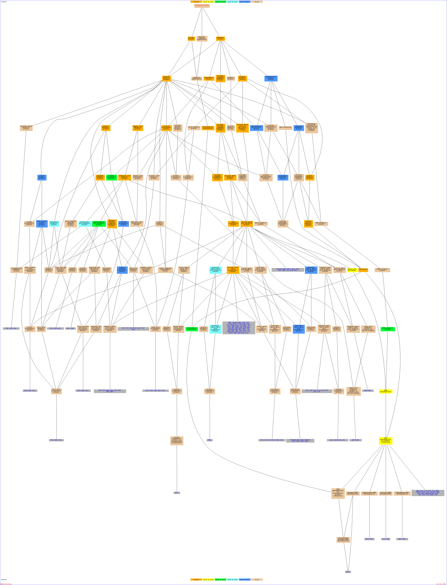

Of your input list, 941 genes are known or unknown but not ambiguous. The total number of genes used to calculate the background distribution of GO terms is 7274.Result Table| Terms from the Process Ontology of gene_association.sgd with p-value <= 0.01 | | Gene Ontology term | Cluster frequency | Genome frequency | Corrected
P-value | FDR | False
Positives | Genes annotated to the term |
|---|
| organic acid metabolic process | 159 of 941 genes, 16.9% | 406 of 7274 genes, 5.6% | 2.60e-40 | 0.00% | 0.00 | WRS1, ADH3, CYB2, CRC1, MSE1, FRS1, ARO4, EHD3, YML082W, BIO2, AGX1, PRO1, KGD1, ILS1, LEU2, MIS1, ACH1, MCT1, LYS21, BIO3, GDH2, MSD1, ARG5,6, SAM2, CPA1, GCV3, FAT1, PDH1, YAT2, CPA2, GUA1, MST1, ABZ1, LYS1, HIS4, IDH2, CAT2, SRY1, FUM1, SAM4, CIT3, DLD3, FAA1, MES1, PYC1, ACC1, HIS3, LYS20, ARG2, LAT1, ACB1, DLD2, YMR210W, TRP4, LEU4, ADE6, ALD6, YDR341C, GRS1, HTD2, THR4, ECM40, YMR293C, URA8, YML096W, YJR111C, HTS1, ILV2, YNL247W, ILV3, SAH1, ARO2, ARG4, HOM3, RDS2, MSW1, TYS1, AAT2, LEU9, PDB1, RML2, YNL045W, ARO1, YPR118W, ASN2, KRS1, IDH1, MET3, YHR020W, IAH1, TRP3, MAE1, LYS9, CEM1, PET112, PCK1, HIS5, ALD4, PHA2, MDH2, UBP14, FAA4, MET22, ACS1, TRP2, ALA1, ACO1, ISA2, SER1, ADH4, MEU1, ARO3, LYS4, EHT1, ARG8, MSY1, LPD1, BAT2, SNF4, IDP1, SHM1, CIT2, FAS2, ADE3, VAS1, LEU1, CIT1, ILV1, LAP3, ARO9, ISM1, LYS2, GCV1, PDA1, YLR089C, SHM2, FOL1, SER33, YDR531W, ICL2, SLM5, MET18, PYC2, ADE4, BNA5, PUT3, ICL1, HOM2, ARG3, UGA1, GCV2, ARG1, KGD2, HIS1, THS1, DED81, LIP2, FRS2, SAM1 | | carboxylic acid metabolic process | 157 of 941 genes, 16.7% | 400 of 7274 genes, 5.5% | 6.89e-40 | 0.00% | 0.00 | WRS1, ADH3, CYB2, CRC1, MSE1, FRS1, ARO4, EHD3, YML082W, BIO2, AGX1, PRO1, KGD1, ILS1, LEU2, MIS1, ACH1, MCT1, LYS21, BIO3, GDH2, MSD1, ARG5,6, SAM2, CPA1, GCV3, FAT1, PDH1, YAT2, CPA2, GUA1, MST1, ABZ1, LYS1, HIS4, IDH2, CAT2, SRY1, FUM1, SAM4, CIT3, DLD3, FAA1, MES1, PYC1, ACC1, HIS3, LYS20, ARG2, LAT1, ACB1, DLD2, YMR210W, TRP4, LEU4, ADE6, ALD6, YDR341C, GRS1, HTD2, THR4, ECM40, YMR293C, URA8, YML096W, HTS1, ILV2, YNL247W, ILV3, SAH1, ARO2, ARG4, HOM3, RDS2, MSW1, TYS1, AAT2, LEU9, PDB1, RML2, YNL045W, ARO1, ASN2, KRS1, YPR118W, IDH1, MET3, YHR020W, IAH1, TRP3, MAE1, LYS9, CEM1, PET112, PCK1, HIS5, ALD4, PHA2, MDH2, UBP14, FAA4, MET22, ACS1, TRP2, ALA1, ACO1, ISA2, SER1, ADH4, MEU1, ARO3, LYS4, EHT1, ARG8, MSY1, LPD1, BAT2, SNF4, IDP1, SHM1, CIT2, FAS2, ADE3, VAS1, LEU1, CIT1, ILV1, LAP3, ARO9, ISM1, LYS2, GCV1, PDA1, YLR089C, SHM2, FOL1, SER33, ICL2, SLM5, MET18, PYC2, ADE4, BNA5, PUT3, ICL1, HOM2, ARG3, UGA1, GCV2, ARG1, KGD2, HIS1, THS1, DED81, LIP2, FRS2, SAM1 | | cellular amino acid and derivative metabolic process | 125 of 941 genes, 13.3% | 272 of 7274 genes, 3.7% | 1.41e-39 | 0.00% | 0.00 | WRS1, ADH3, MSE1, BNA4, FRS1, ARO4, EHD3, ARO1, DYS1, YML082W, YPR118W, KRS1, ASN2, AGX1, PRO1, IDH1, ILS1, LEU2, YHR020W, MET3, MIS1, TRP3, MUQ1, MAE1, LYS9, SPE1, PET112, LYS21, GDH2, HIS5, MSD1, ARG5,6, YPL103C, PHA2, SAM2, CPA1, MET22, GCV3, TRP2, ALA1, ACO1, SER1, ARO3, MEU1, ADH4, LYS4, YAT2, CPA2, GUA1, LIA1, MSY1, ARG8, LPD1, MST1, SPE4, YHR198C, ABZ1, LYS1, HIS4, BAT2, IDH2, CAT2, SRY1, SHM1, IDP1, FMS1, CIT2, SAM4, ADE3, VAS1, MES1, LEU1, HIS3, CIT1, LYS20, ARG2, TRP4, LEU4, ILV1, ADE6, LAP3, ARO9, ISM1, LYS2, YDR341C, GRS1, GCV1, YLR089C, THR4, SHM2, HYP2, SER33, ECM40, ICL2, YMR293C, URA8, SLM5, YML096W, HTS1, PYC2, MET18, ADE4, ILV2, BNA5, PUT3, HOM2, ARG3, ILV3, YNL247W, SAH1, ARO2, UGA1, ARG4, GCV2, HOM3, ARG1, HIS1, MSW1, THS1, TYS1, DED81, AAT2, LEU9, SAM1, FRS2 | | metabolic process | 764 of 941 genes, 81.2% | 4527 of 7274 genes, 62.2% | 1.69e-38 | 0.00% | 0.00 | RIX1, WRS1, CYB5, SOH1, CRC1, COX6, BNA4, RPL23A, MAL33, YMR237W, IPP1, AST1, ARP6, DYS1, RPL5, QRI5, UME1, AGX1, ADE17, CDC73, NGL1, TSA1, GCD10, RHB1, MUQ1, MTO1, CCT7, TAH1, YLF2, TPK2, MSD1, RPC11, QCR10, YNL122C, CLU1, CPA1, RPS21B, HAP4, YPL207W, CLP1, QCR8, LYS1, CWP1, PUS7, CYM1, YOR286W, JJJ3, HUT1, NAT1, NUP1, SAM4, CDA1, CIT3, YLR419W, RPL20B, RPS13, SEC16, HIS3, TRM112, NOP58, TRM3, RPL14B, CDC47, PHO86, ADE6, HTD2, MRPL35, ZPR1, YLR199C, ECM40, GAL80, YMR293C, GCD7, YJR111C, OCT1, RPL40B, TIF2, HPA2, RSM28, FUS3, CKS1, SAH1, APA2, HOM3, YCK3, RPS16A, MSW1, YGR058W, YIL165C, PRE3, PTC2, PET309, AAD6, RDS3, HOG1, YNL045W, RPL7B, YLR168C, YOL098C, RPA135, ATP12, YNL035C, IMD2, MRP2, MET3, YKR005C, CHK1, TRP3, MAE1, RAS2, CWC23, PCK1, YBT1, HEM13, SDT1, DST1, YJL068C, PHA2, MDH2, MET22, YJL216C, LST8, FAA4, YDL025C, ALA1, ADH4, EHT1, CAX4, SNZ1, MSY1, ARG8, EAP1, PPS1, PRP38, TIM22, URA4, YHB1, IDP1, SNF4, MRPL3, GLG2, MRP49, HAT2, RPT4, CYT2, UTR2, LEU1, TTR1, MRPL40, MRP20, MMS2, NIT1, CST9, TIF1, PPA2, WAR1, KAP104, UBX6, SER33, RLI1, RSM7, YFR007W, YGR001C, YLR253W, DML1, NOC4, MVD1, PGS1, COQ5, DEF1, CHS6, YER007C-A, PRS4, PRD1, SHE2, RPL21B, AAD16, KTR3, CYB2, PUB1, CBP3, SET2, YDR132C, IOC3, GGA2, YHR045W, ARO4, TOM22, YOR315W, SSU1, ISA1, RPS21A, YGL039W, BIO2, YKR070W, YJL200C, YME1, MCT1, BIO3, GDH2, YHL021C, CTA1, CCT8, SAM35, RNH203, BNA1, GCV3, ERG26, RSM26, YAT2, EXG2, YGR263C, UBA1, GUA1, PWP1, YCL057C-A, CDC20, NAM9, IDH2, CAT2, ADE12, MRPL22, RRN5, YPR011C, FAA1, YMR187C, TIM50, COQ6, LAG1, ACC1, YNR018W, ADH6, TAL1, MRPL28, DLD2, IMD4, LEU4, AAD4, RPL18B, UTP15, YTM1, RPS11A, RPL17A, RPS18B, MSS51, HTS1, YPL272C, MTR3, SHC1, MRS6, HEM15, ILV2, YCK1, YLR132C, YFL044C, ARO2, YMR073C, YOL003C, GRX3, MRPS35, PWP2, RPL3, GRX5, YMR166C, TEF2, TWF1, AFG3, ACS2, PTC4, MRPL15, PDB1, KAR4, RML2, YOL157C, SAD1, RSM24, MRPL4, PCF11, SPO11, ARO1, LSC1, YUR1, ECM7, CLN2, IDH1, YHR020W, GAB1, RSM23, GLE2, CEM1, SEC18, HIS5, TRM2, THI5, RPB3, EAF3, MDM20, MNN9, YER078C, UBP14, SNZ3, CTM1, SER1, CPR3, LYS4, NAS6, YDL038C, RPS4B, LPD1, GDA1, URB2, SSA2, SHM1, SOL2, YOR251C, YVH1, MHR1, MAM33, OMA1, YIL083C, ADK1, ADE3, PET9, YAH1, FET5, FYV4, IMD3, CIT1, YNL168C, RIM11, DUS3, LAP3, ISM1, PDA1, RPT6, YLR089C, RPS0A, COX4, KAE1, YHR122W, VTS1, YLR108C, PYC2, CTP1, RPL31B, ADE4, PAB1, TEF4, ICL1, FUN34, THI11, MAS6, HRP1, DPH1, GCV2, ARG1, MRPL19, HIS1, CYT1, SYN8, TRM82, QCR6, DMA2, URA1, YEL001C, ERB1, RPL38, ADH3, HAS1, SSU72, UTP18, PRE8, MRP10, ITR1, SMP3, TPK3, YML082W, RPA190, DAL2, ARC35, ATP16, YPS6, ILS1, LEU2, MIS1, YPR004C, SLD5, ACH1, MNS1, MMR1, LYS21, RPS2, RPS11B, YIM1, HIM1, MCA1, YDL180W, YDR367W, YKL047W, YMC1, SIT4, RHO4, YLR201C, YER064C, LIA1, MST1, RPN9, DUS4, CYC1, SRY1, FUM1, YNL311C, UTP8, YJL206C, RNQ1, RPS22A, MES1, YER113C, SSY5, PYC1, PRE2, RSM25, LYS20, RPL17B, RPL40A, LAT1, RHR2, AFG1, PTC1, HFI1, COR1, ALD6, YHR133C, NPT1, DRE2, ATP3, DLD1, TAZ1, MSC6, PUF2, CLG1, HYP2, YOR071C, URA8, CDC4, SGN1, ADE2, YOR238W, SCY1, YML096W, DBP2, KAP120, SCM4, GCD1, LCB2, HSP10, ERG12, PHO80, RPS5, ILV3, YNL247W, FZF1, CWH41, ATP5, MID2, RAM2, OSM1, TYS1, AAT2, GUT2, LEU9, SHY1, GUT1, COP1, PUS6, HRK1, MTF1, TIF34, MAS2, YJL213W, MRPS5, FLX1, SOL1, YMR315W, SWD2, YPR118W, ASN2, TRR1, RPC31, IAH1, TRM11, SIZ1, TRL1, ALD4, QRI7, LSC2, CAF4, MKK1, TRP2, ACO1, ISA2, PPG1, NOG1, ARO3, BNA6, YEA4, YFR018C, COX5A, YPL113C, SMF1, TIF5, POP2, YNL010W, FMS1, CIT2, STE23, YML6, RPL14A, MDM10, SFB3, QCR2, PTP1, YML125C, YHR009C, FAS2, ADE13, RPN14, YMR099C, RPP1, KRE9, SFB2, VAC8, TRM1, UMP1, MRP4, MAK10, ILV1, YNL326C, PCL9, GAL83, RSC6, YDR531W, ICL2, SLM5, RPS4A, VPS75, PPT1, MET18, MBA1, ASH1, BNA5, PUT3, RPM2, HOM2, TIM11, YIL042C, UGA1, HSP60, GPB1, ESS1, RAD6, SWI5, YCK2, GPI14, DED81, MKC7, CYC3, YPL201C, YKL033W, BMH2, POS5, MSE1, YDC1, ALG2, ULA1, FRS1, SKN7, ABC1, YLR281C, EHD3, RPL23B, JAC1, RPL24A, PRO1, YCL045C, KGD1, SSO2, YDL144C, NAT2, SKI8, HEM12, SPE1, PRE4, PRE10, TOM5, ARG5,6, YBL055C, YPL103C, SCD6, UBC4, MPD1, RSC1, SAM2, NDE1, ATP17, YIR042C, PNT1, FAT1, PDH1, CPA2, DPH5, MRPL6, RSM22, SPE4, GTR2, YML087C, ABZ1, HIS4, TEF1, ELP2, YHR113W, YIL137C, PAN3, DCW1, DLD3, RIM2, MRPS9, AEP2, BIG1, NCS2, ARG2, HXT4, APS3, ACB1, CBP2, MRPL7, PMP2, YMR210W, ARP3, SMD1, TRP4, COX8, GRS1, YDR341C, EMG1, YNL080C, THR4, EMI1, TOM71, GCN3, INO2, RPS28A, MRS2, MEF1, TRS31, BIT61, WTM1, NIF3, YNL123W, DPH2, AMN1, ARG4, TCM62, HCS1, PUF4, SIK1, HYR1, SAT4, URA3, RDS2, NAR1, YGR110W, CDC43, MAS1, TOM6, FUR1, DSK2, NDE2, SDH2, RPL8B, YOL008W, YDR493W, GSY2, YGR203W, IXR1, RPA49, KRS1, HEM2, RAX2, MRH4, CTS2, ECM29, LYS9, PET112, YKL033W-A, YJR107W, SEC13, YLR193C, BPL1, ACS1, RIM4, YLR050C, MEU1, PSD1, YHR198C, RPL6B, BAT2, GIS3, SEH1, MRPL1, YGL059W, YLR364W, COX10, YOR356W, NCA2, VAS1, RPA14, ERG13, TRZ1, UBC9, GLR1, SUA5, YNL134C, THI12, ARO9, LYS2, COX23, ALO1, GCV1, TCP1, RAS1, SHM2, FOL1, CAP2, SDS23, ALF1, SET7, NUC1, SSZ1, MRP13, NPY1, RPS18A, CCT4, YFH1, ARG3, BDH1, MDM32, RPS15, COX11, MRS1, KGD2, YER049W, AHC1, APE2, TEC1, CAF17, THS1, APL6, NIP7, LIP2, SAM50, FRS2, SAM1, GAL3 | | cellular amine metabolic process | 122 of 941 genes, 13.0% | 272 of 7274 genes, 3.7% | 3.56e-37 | 0.00% | 0.00 | WRS1, ADH3, MSE1, FRS1, ARO4, YLR168C, EHD3, ARO1, DYS1, YML082W, YPR118W, KRS1, ASN2, AGX1, PRO1, DAL2, IDH1, ILS1, LEU2, YHR020W, MET3, MIS1, TRP3, MUQ1, MAE1, LYS9, SPE1, PET112, LYS21, GDH2, HIS5, MSD1, ARG5,6, YPL103C, PHA2, SAM2, CPA1, MET22, GCV3, TRP2, ALA1, ACO1, SER1, ARO3, MEU1, ADH4, LYS4, YAT2, CPA2, GUA1, MSY1, ARG8, LPD1, MST1, SPE4, ABZ1, LYS1, HIS4, BAT2, IDH2, CAT2, SRY1, SHM1, IDP1, FMS1, CIT2, SAM4, ADE3, VAS1, MES1, LEU1, HIS3, CIT1, LYS20, ARG2, TRP4, LEU4, ILV1, ADE6, LAP3, ARO9, ISM1, LYS2, YDR341C, GRS1, GCV1, YLR089C, THR4, SHM2, SER33, ECM40, ICL2, YMR293C, URA8, SLM5, YML096W, HTS1, MET18, ADE4, ILV2, PUT3, BNA5, HOM2, ARG3, ILV3, YNL247W, SAH1, ARO2, UGA1, ARG4, GCV2, HOM3, ARG1, HIS1, MSW1, THS1, TYS1, DED81, AAT2, LEU9, SAM1, FRS2 | | cellular nitrogen compound metabolic process | 122 of 941 genes, 13.0% | 275 of 7274 genes, 3.8% | 1.44e-36 | 0.00% | 0.00 | WRS1, ADH3, MSE1, FRS1, ARO4, YLR168C, EHD3, ARO1, DYS1, YML082W, YPR118W, KRS1, ASN2, AGX1, PRO1, DAL2, IDH1, ILS1, LEU2, YHR020W, MET3, MIS1, TRP3, MUQ1, MAE1, LYS9, SPE1, PET112, LYS21, GDH2, HIS5, MSD1, ARG5,6, YPL103C, PHA2, SAM2, CPA1, MET22, GCV3, TRP2, ALA1, ACO1, SER1, ARO3, MEU1, ADH4, LYS4, YAT2, CPA2, GUA1, MSY1, ARG8, LPD1, MST1, SPE4, ABZ1, LYS1, HIS4, BAT2, IDH2, CAT2, SRY1, SHM1, IDP1, FMS1, CIT2, SAM4, ADE3, VAS1, MES1, LEU1, HIS3, CIT1, LYS20, ARG2, TRP4, LEU4, ILV1, ADE6, LAP3, ARO9, ISM1, LYS2, YDR341C, GRS1, GCV1, YLR089C, THR4, SHM2, SER33, ECM40, ICL2, YMR293C, URA8, SLM5, YML096W, HTS1, MET18, ADE4, ILV2, PUT3, BNA5, HOM2, ARG3, ILV3, YNL247W, SAH1, ARO2, UGA1, ARG4, GCV2, HOM3, ARG1, HIS1, MSW1, THS1, TYS1, DED81, AAT2, LEU9, SAM1, FRS2 | | cellular amino acid metabolic process | 111 of 941 genes, 11.8% | 247 of 7274 genes, 3.4% | 1.30e-33 | 0.00% | 0.00 | WRS1, ADH3, MSE1, FRS1, ARO4, EHD3, ARO1, YML082W, YPR118W, KRS1, ASN2, AGX1, PRO1, IDH1, ILS1, LEU2, YHR020W, MET3, MIS1, TRP3, MAE1, LYS9, PET112, LYS21, GDH2, HIS5, MSD1, ARG5,6, PHA2, SAM2, CPA1, MET22, GCV3, TRP2, ALA1, ACO1, SER1, ARO3, MEU1, ADH4, LYS4, CPA2, GUA1, MSY1, ARG8, LPD1, MST1, ABZ1, LYS1, HIS4, BAT2, IDH2, SRY1, SHM1, IDP1, CIT2, SAM4, ADE3, VAS1, MES1, LEU1, HIS3, CIT1, LYS20, ARG2, TRP4, LEU4, ILV1, ADE6, LAP3, ARO9, ISM1, LYS2, GRS1, YDR341C, GCV1, YLR089C, THR4, SHM2, SER33, ECM40, ICL2, YMR293C, URA8, SLM5, YML096W, HTS1, MET18, ADE4, ILV2, BNA5, PUT3, HOM2, ILV3, YNL247W, ARG3, ARO2, SAH1, ARG4, GCV2, HOM3, ARG1, HIS1, MSW1, THS1, TYS1, AAT2, DED81, LEU9, SAM1, FRS2 | | nitrogen compound metabolic process | 126 of 941 genes, 13.4% | 309 of 7274 genes, 4.2% | 3.19e-33 | 0.00% | 0.00 | WRS1, ADH3, MSE1, FRS1, ARO4, YLR168C, EHD3, ARO1, DYS1, YML082W, YPR118W, KRS1, ASN2, AGX1, PRO1, DAL2, IDH1, ILS1, LEU2, YHR020W, MET3, MIS1, TRP3, MUQ1, MAE1, LYS9, SPE1, PET112, LYS21, GDH2, HIS5, MSD1, ARG5,6, YPL103C, PHA2, SAM2, CPA1, MET22, GCV3, TRP2, ALA1, ACO1, SER1, ARO3, MEU1, ADH4, LYS4, YAT2, CPA2, GUA1, MSY1, ARG8, LPD1, MST1, SPE4, ABZ1, LYS1, HIS4, BAT2, IDH2, CAT2, SRY1, SHM1, IDP1, FMS1, CIT2, SAM4, DLD3, ADE3, VAS1, MES1, LEU1, HIS3, CIT1, LYS20, ARG2, TRP4, LEU4, ILV1, ADE6, NIT1, LAP3, LYS2, ARO9, ISM1, YDR341C, GRS1, GCV1, YLR089C, THR4, SHM2, SER33, ECM40, ICL2, YMR293C, URA8, SLM5, YML096W, HTS1, MET18, ADE4, ILV2, PUT3, BNA5, FUN34, HOM2, ARG3, ILV3, YNL247W, SAH1, ARO2, UGA1, ARG4, GCV2, HOM3, ARG1, HIS1, MSW1, THS1, YIL165C, TYS1, DED81, AAT2, LEU9, SAM1, FRS2 | | cellular process | 824 of 941 genes, 87.6% | 5304 of 7274 genes, 72.9% | 1.97e-28 | 0.00% | 0.00 | RIX1, WRS1, CYB5, SOH1, CRC1, COX6, BNA4, RPL23A, MAL33, SQT1, YMR237W, IPP1, AST1, ARP6, DYS1, RPL5, QRI5, UME1, AGX1, ADE17, CDC73, NGL1, TSA1, AGA1, GCD10, CMP2, RHB1, MUQ1, MTO1, CCT7, TAH1, YLF2, TPK2, MSD1, RPC11, QCR10, MTL1, YNL122C, CLU1, CPA1, RPS21B, HAP4, YPL207W, CLP1, QCR8, LYS1, CWP1, PUS7, MDM36, MDM34, CDC42, YOR286W, JJJ3, HUT1, NAT1, NUP1, SAM4, CDA1, CIT3, YLR419W, RPL20B, RPS13, SEC16, YNL086W, HIS3, TRM112, NOP58, TRM3, RPL14B, CDC47, PHO86, ATC1, ADE6, HTD2, MRPL35, ZPR1, YLR199C, ECM40, GAL80, YMR293C, GCD7, YJR111C, OCT1, RPL40B, TIF2, MRS11, HPA2, RSM28, YKR065C, ECM13, FUS3, CKS1, SAH1, APA2, HOM3, YCK3, RPS16A, MSW1, YGR058W, AGP3, PRE3, PTC2, PET309, AAD6, RDS3, PEX8, HOG1, YNL045W, RPL7B, YLR168C, YOL098C, RPA135, ATP12, YIL041W, YNL035C, IMD2, MRP2, MET3, YKR005C, CHK1, TRP3, MAE1, RAS2, CWC23, PCK1, YBT1, HEM13, SDT1, DST1, YJL068C, PHA2, MDH2, MET22, YJL216C, LST8, FAA4, YDL025C, ALA1, YAP1801, ADH4, EHT1, CAX4, SNZ1, MSY1, ARG8, EAP1, PPS1, PRP38, TIM22, URA4, IDP1, SNF4, MRPL3, GLG2, MRP49, HAT2, RPT4, CYT2, PAM18, UTR2, LEU1, TTR1, MRPL40, MRP20, MMS2, PEX7, CST9, TIF1, PPA2, WAR1, KAP104, UBX6, SER33, RLI1, RSM7, YFR007W, YGR001C, YLR253W, YKR016W, DML1, APP1, ATP11, PIC2, NOC4, MVD1, PGS1, COQ5, DEF1, SCO1, CHS6, YER007C-A, PRS4, SHE2, RPL21B, AAD16, KTR3, CYB2, PUB1, CBP3, SET2, YDR132C, IOC3, GGA2, YHR045W, ARO4, TOM22, ATM1, YOR315W, SSU1, ISA1, RPS21A, NUP82, ECM19, YGL039W, SRO77, BIO2, YKR070W, YJL200C, YME1, MCT1, BIO3, GDH2, YHL021C, CTA1, CCT8, SAM35, RNH203, BNA1, GCV3, ERG26, BEM4, RSM26, YAT2, ODC1, EXG2, YGR263C, UBA1, GUA1, PWP1, YCL057C-A, CDC20, NAM9, IDH2, CAT2, ADE12, KRE11, MRPL22, RRN5, YPR011C, SHO1, FAA1, YMR187C, TIM50, COQ6, LAG1, ACC1, YNR018W, ADH6, TAL1, MRPL28, DLD2, IMD4, LEU4, AAD4, RPL18B, UTP15, YTM1, RPS11A, RPL17A, RPS18B, MSS51, HTS1, YPL272C, MTR3, SHC1, MRS6, HEM15, ILV2, YCK1, YLR132C, YFL044C, ARO2, STE4, YMR073C, YOL003C, GRX3, SAL1, MRPS35, PWP2, RPL3, GRX5, YMR166C, TEF2, TWF1, AFG3, ACS2, PTC4, MRPL15, PDB1, RGD1, KAR4, RML2, YOL157C, SAD1, RSM24, MRPL4, PCF11, SPO11, ARO1, LSC1, YUR1, ECM7, CLN2, ECM25, IDH1, YHR020W, GAB1, MDV1, RSM23, GLE2, CEM1, SEC18, HIS5, TRM2, THI5, APL3, RPB3, EAF3, MDM20, MNN9, YER078C, UBP14, SNZ3, MIP6, CTM1, SER1, CPR3, LYS4, NAS6, YDL038C, RPS4B, LPD1, GDA1, URB2, SSA2, SHM1, PHO89, SOL2, YOR251C, YVH1, MHR1, MAM33, TOM40, MIA40, OMA1, YIL083C, ADK1, ADE3, PET9, YAH1, GIT1, FYV4, IMD3, CIT1, RIM11, DUS3, LAP3, ISM1, PDA1, RPT6, YLR089C, NUP133, RPS0A, COX4, KAE1, YHR122W, VTS1, YLR108C, PYC2, MMM1, CTP1, RPL31B, ADE4, PAB1, TEF4, ICL1, THI11, MAS6, HRP1, DPH1, GCV2, ARG1, MRPL19, HIS1, COX18, CYT1, SYN8, TRM82, QCR6, DMA2, URA1, YEL001C, ERB1, YCR072C, RPL38, ADH3, HAS1, PEX31, SSU72, UTP18, PRE8, PSE1, MRP10, ITR1, SMP3, TPK3, YML082W, RPA190, ARC35, DAL2, ATP16, ILS1, LEU2, MIS1, YPR004C, SLD5, ACH1, MNS1, MMR1, LYS21, RPS2, RPS11B, HIM1, MCA1, YDL180W, YDR367W, YGR046W, YKL047W, YMC1, SIT4, RHO4, YLR201C, YER064C, LIA1, MST1, RPN9, CYC1, DUS4, SRY1, ARX1, FUM1, SEC22, YNL311C, UTP8, YJL206C, RNQ1, MMT2, RPS22A, MES1, YER113C, PYC1, PRE2, SRP101, RSM25, LYS20, RPL17B, RPL40A, LAT1, RHR2, AFG1, PTC1, HFI1, COR1, YPL098C, ALD6, YHR133C, SEC63, NPT1, TOM20, DRE2, ATP3, DLD1, TAZ1, YIL039W, MSC6, PUF2, CLG1, HYP2, YOR071C, URA8, CDC4, SGN1, ADE2, YOR238W, SCY1, YML096W, DBP2, KAP120, SCM4, GCD1, LCB2, HSP10, ERG12, PHO80, RPS5, ILV3, YNL247W, PKR1, FZF1, CWH41, ATP5, MID2, RAM2, TYS1, AAT2, GUT2, LEU9, SHY1, GUT1, COP1, PUS6, HRK1, MTF1, TIF34, MAS2, YJL213W, MRPS5, FLX1, SOL1, SWD2, YPR118W, ASN2, TRR1, RPC31, IAH1, TRM11, SIZ1, TRL1, ALD4, QRI7, LSC2, CAF4, MKK1, TRP2, ACO1, ISA2, PPG1, NOG1, ARO3, BNA6, YEA4, COX5A, SMF1, TIF5, MGM1, POP2, FMS1, CIT2, YML6, RPL14A, MDM10, SFB3, QCR2, YML125C, PTP1, YHR009C, FAS2, ADE13, RPN14, KRE9, RPP1, SFB2, VAC8, TRM1, UMP1, UGO1, MRP4, MAK10, ILV1, NUP42, YNL326C, PCL9, YHM2, GAL83, RSC6, YDR531W, ICL2, SLM5, RPS4A, VPS75, PPT1, MET18, MBA1, DIT1, COG2, ASH1, BNA5, PUT3, RPM2, HOM2, TIM11, YIL042C, UGA1, HSP60, YKL091C, GPB1, ESS1, RAD6, SWI5, YCK2, GPI14, DED81, CYC3, YPL201C, NUP100, YKL033W, MUC1, BMH2, COG1, POS5, MSE1, YDC1, ALG2, ULA1, FRS1, SKN7, ABC1, YLR281C, EHD3, RPL23B, JAC1, RPL24A, YOR112W, PRO1, YCL045C, KGD1, SSO2, YDL144C, NAT2, SKI8, HEM12, SPE1, PRE4, PRE10, TOM5, ARG5,6, YBL055C, YPL103C, SCD6, UBC4, MPD1, RSC1, SAM2, NDE1, YIR042C, ATP17, PNT1, FAT1, PDH1, CPA2, DPH5, MRPL6, RSM22, SPE4, GTR2, ABZ1, HIS4, TEF1, ELP2, MAK32, YIL137C, PAN3, DCW1, DLD3, RIM2, YMR259C, MRPS9, AEP2, SAP4, BIG1, NCS2, ARG2, HXT4, APS3, ACB1, CBP2, YMR210W, MRPL7, PMP2, ARP3, SMD1, TRP4, COX8, GRS1, YDR341C, EMG1, YNL080C, THR4, EMI1, TOM71, GCN3, INO2, RPS28A, MRS2, MEF1, TRS31, BIT61, WTM1, NIF3, YNL123W, DPH2, AMN1, ARG4, TCM62, PAM1, HCS1, PUF4, SIK1, SAT4, YOR088W, URA3, RDS2, NAR1, YGR110W, MAS1, CDC43, DSK2, TOM6, FUR1, NDE2, SDH2, RPL8B, YOL008W, YDR493W, GSY2, YGR203W, IXR1, SEC26, RPA49, OAC1, KRS1, HEM2, RAX2, MRH4, CTS2, PRM5, LYS9, PET112, YKL033W-A, YJR107W, SEC13, YLR193C, BPL1, ACS1, RIM4, YLR050C, MEU1, PSD1, YHR198C, RPL6B, BAT2, AIP1, GIS3, SEH1, MRPL1, YGL059W, YLR364W, SRV2, COX10, YOR356W, NCA2, VAS1, RPA14, ERG13, YPL183C, TRZ1, UBC9, GLR1, SUA5, THI12, ARO9, LYS2, COX23, ALO1, GCV1, TCP1, RAS1, SHM2, FOL1, CAP2, SDS23, YMR244C-A, ALF1, SET7, NUC1, EMP47, YDR089W, SSZ1, MRP13, NPY1, RPS18A, CCT4, YFH1, ARG3, BDH1, MDM32, YAR028W, RPS15, COX11, MRS1, KGD2, YER049W, AHC1, APE2, TEC1, CAF17, THS1, APL6, NIP7, LIP2, SAM50, FRS2, SAM1, GAL3 | | cellular metabolic process | 717 of 941 genes, 76.2% | 4334 of 7274 genes, 59.6% | 1.04e-27 | 0.00% | 0.00 | RIX1, WRS1, CYB5, SOH1, CRC1, COX6, BNA4, RPL23A, MAL33, YMR237W, IPP1, AST1, ARP6, DYS1, RPL5, QRI5, UME1, AGX1, ADE17, CDC73, NGL1, TSA1, GCD10, RHB1, MUQ1, MTO1, CCT7, TAH1, YLF2, TPK2, MSD1, RPC11, QCR10, YNL122C, CLU1, CPA1, RPS21B, HAP4, YPL207W, CLP1, QCR8, LYS1, CWP1, PUS7, YOR286W, JJJ3, HUT1, NAT1, NUP1, SAM4, CIT3, YLR419W, RPL20B, RPS13, SEC16, HIS3, TRM112, NOP58, TRM3, RPL14B, CDC47, PHO86, ADE6, HTD2, MRPL35, ZPR1, ECM40, GAL80, YMR293C, GCD7, YJR111C, RPL40B, TIF2, HPA2, RSM28, FUS3, CKS1, SAH1, APA2, HOM3, YCK3, RPS16A, MSW1, YGR058W, PRE3, PTC2, PET309, AAD6, RDS3, HOG1, YNL045W, RPL7B, YLR168C, YOL098C, RPA135, ATP12, YNL035C, IMD2, MRP2, MET3, YKR005C, CHK1, TRP3, MAE1, RAS2, CWC23, PCK1, YBT1, HEM13, SDT1, DST1, YJL068C, PHA2, MDH2, MET22, YJL216C, LST8, FAA4, YDL025C, ALA1, ADH4, EHT1, CAX4, SNZ1, MSY1, ARG8, EAP1, PPS1, PRP38, TIM22, URA4, IDP1, SNF4, MRPL3, GLG2, MRP49, HAT2, RPT4, CYT2, LEU1, TTR1, MRPL40, MRP20, MMS2, CST9, TIF1, PPA2, WAR1, KAP104, UBX6, SER33, RLI1, RSM7, YFR007W, YGR001C, YLR253W, DML1, NOC4, MVD1, PGS1, COQ5, DEF1, CHS6, YER007C-A, PRS4, SHE2, RPL21B, AAD16, KTR3, CYB2, PUB1, CBP3, SET2, YDR132C, IOC3, GGA2, YHR045W, ARO4, TOM22, YOR315W, SSU1, ISA1, RPS21A, YGL039W, BIO2, YJL200C, YME1, MCT1, BIO3, GDH2, CTA1, CCT8, RNH203, BNA1, GCV3, ERG26, RSM26, YAT2, YGR263C, UBA1, GUA1, PWP1, YCL057C-A, CDC20, NAM9, IDH2, CAT2, ADE12, MRPL22, RRN5, YPR011C, FAA1, YMR187C, TIM50, COQ6, LAG1, ACC1, YNR018W, ADH6, TAL1, MRPL28, DLD2, IMD4, LEU4, AAD4, RPL18B, UTP15, YTM1, RPS11A, RPL17A, RPS18B, MSS51, HTS1, YPL272C, MTR3, SHC1, MRS6, HEM15, ILV2, YCK1, YLR132C, YFL044C, ARO2, YMR073C, YOL003C, GRX3, MRPS35, PWP2, RPL3, GRX5, YMR166C, TEF2, TWF1, AFG3, ACS2, PTC4, MRPL15, PDB1, KAR4, RML2, YOL157C, SAD1, RSM24, MRPL4, PCF11, SPO11, ARO1, LSC1, YUR1, CLN2, IDH1, YHR020W, GAB1, RSM23, GLE2, CEM1, SEC18, HIS5, TRM2, THI5, RPB3, EAF3, MDM20, MNN9, UBP14, SNZ3, CTM1, SER1, CPR3, LYS4, YDL038C, RPS4B, LPD1, GDA1, URB2, SSA2, SHM1, SOL2, YOR251C, YVH1, MHR1, MAM33, OMA1, ADK1, YIL083C, ADE3, PET9, YAH1, FYV4, IMD3, CIT1, RIM11, DUS3, LAP3, ISM1, PDA1, RPT6, YLR089C, RPS0A, COX4, KAE1, YHR122W, VTS1, YLR108C, PYC2, CTP1, RPL31B, ADE4, PAB1, TEF4, ICL1, THI11, MAS6, HRP1, DPH1, GCV2, ARG1, MRPL19, HIS1, CYT1, TRM82, QCR6, DMA2, URA1, YEL001C, ERB1, RPL38, ADH3, HAS1, SSU72, UTP18, PRE8, MRP10, SMP3, TPK3, YML082W, RPA190, DAL2, ARC35, ATP16, ILS1, LEU2, MIS1, SLD5, YPR004C, ACH1, MNS1, MMR1, LYS21, RPS2, RPS11B, HIM1, MCA1, YDL180W, YDR367W, YKL047W, YMC1, SIT4, RHO4, YLR201C, YER064C, LIA1, MST1, RPN9, DUS4, CYC1, SRY1, FUM1, YNL311C, UTP8, YJL206C, RNQ1, RPS22A, MES1, YER113C, PYC1, PRE2, RSM25, LYS20, RPL17B, RPL40A, LAT1, RHR2, AFG1, PTC1, HFI1, COR1, ALD6, YHR133C, NPT1, DRE2, ATP3, DLD1, TAZ1, MSC6, PUF2, CLG1, HYP2, YOR071C, URA8, CDC4, SGN1, ADE2, YOR238W, SCY1, YML096W, DBP2, KAP120, SCM4, GCD1, LCB2, HSP10, ERG12, PHO80, RPS5, ILV3, YNL247W, FZF1, CWH41, MID2, ATP5, RAM2, TYS1, AAT2, GUT2, LEU9, SHY1, GUT1, COP1, PUS6, HRK1, MTF1, TIF34, YJL213W, MRPS5, FLX1, SOL1, SWD2, YPR118W, ASN2, TRR1, RPC31, IAH1, TRM11, SIZ1, TRL1, ALD4, LSC2, CAF4, MKK1, TRP2, ACO1, ISA2, PPG1, NOG1, ARO3, BNA6, YEA4, COX5A, SMF1, TIF5, POP2, FMS1, CIT2, YML6, RPL14A, MDM10, QCR2, PTP1, YML125C, YHR009C, FAS2, ADE13, RPN14, RPP1, KRE9, SFB2, VAC8, TRM1, UMP1, MRP4, MAK10, ILV1, YNL326C, PCL9, GAL83, RSC6, YDR531W, ICL2, SLM5, RPS4A, VPS75, PPT1, MET18, MBA1, BNA5, PUT3, ASH1, RPM2, HOM2, TIM11, YIL042C, UGA1, HSP60, GPB1, ESS1, RAD6, SWI5, GPI14, YCK2, DED81, CYC3, YPL201C, YKL033W, BMH2, POS5, MSE1, YDC1, ALG2, ULA1, FRS1, SKN7, ABC1, YLR281C, EHD3, RPL23B, JAC1, RPL24A, PRO1, YCL045C, KGD1, SSO2, YDL144C, NAT2, SKI8, HEM12, SPE1, PRE4, PRE10, TOM5, ARG5,6, YBL055C, YPL103C, SCD6, UBC4, MPD1, RSC1, SAM2, NDE1, ATP17, YIR042C, PNT1, FAT1, PDH1, CPA2, DPH5, MRPL6, RSM22, SPE4, GTR2, ABZ1, HIS4, TEF1, ELP2, PAN3, DLD3, RIM2, MRPS9, AEP2, BIG1, NCS2, ARG2, HXT4, ACB1, CBP2, MRPL7, PMP2, YMR210W, ARP3, SMD1, TRP4, COX8, GRS1, YDR341C, EMG1, YNL080C, THR4, EMI1, TOM71, GCN3, INO2, RPS28A, MRS2, TRS31, MEF1, BIT61, WTM1, NIF3, DPH2, AMN1, ARG4, TCM62, HCS1, PUF4, SIK1, SAT4, URA3, RDS2, NAR1, YGR110W, CDC43, TOM6, FUR1, DSK2, NDE2, SDH2, RPL8B, YOL008W, YDR493W, GSY2, IXR1, YGR203W, RPA49, KRS1, HEM2, RAX2, MRH4, LYS9, PET112, YKL033W-A, SEC13, YLR193C, BPL1, ACS1, RIM4, YLR050C, MEU1, PSD1, YHR198C, BAT2, RPL6B, GIS3, SEH1, MRPL1, YGL059W, YLR364W, COX10, YOR356W, NCA2, VAS1, RPA14, ERG13, TRZ1, UBC9, GLR1, SUA5, THI12, ARO9, LYS2, COX23, ALO1, GCV1, TCP1, RAS1, SHM2, FOL1, CAP2, SDS23, ALF1, SET7, NUC1, SSZ1, MRP13, NPY1, RPS18A, CCT4, YFH1, ARG3, BDH1, MDM32, RPS15, COX11, MRS1, KGD2, YER049W, AHC1, APE2, TEC1, CAF17, THS1, APL6, NIP7, LIP2, SAM50, FRS2, SAM1, GAL3 | | cellular respiration | 75 of 941 genes, 8.0% | 161 of 7274 genes, 2.2% | 4.36e-23 | 0.00% | 0.00 | YOL008W, RML2, CBP3, RSM24, COX6, MRPL4, ABC1, EHD3, LSC1, JAC1, HEM2, KGD1, IDH1, YPR004C, NGL1, YJL200C, MCT1, QCR10, LSC2, MDH2, NDE1, ACO1, YLR201C, COX5A, QCR8, YCL057C-A, CYC1, IDH2, IDP1, FUM1, CIT2, YML6, MRPL1, MRPL22, QCR2, MAM33, CIT3, COX10, YOR356W, PET9, NCA2, MRPS9, AEP2, RSM25, CIT1, HXT4, COR1, COX8, MRP4, ALD6, ISM1, COX23, MRPL35, PPA2, TAZ1, MSC6, DLD1, COX4, YMR293C, MBA1, ICL1, YFH1, MDM32, COX11, MRPS35, KGD2, COQ5, MRPL19, CYT1, YMR166C, QCR6, SHY1, MRPL15, PET309, SDH2 | | amine biosynthetic process | 67 of 941 genes, 7.1% | 138 of 7274 genes, 1.9% | 1.08e-21 | 0.00% | 0.00 | ARO4, ARO1, YML082W, YPR118W, ASN2, AGX1, PRO1, IDH1, LEU2, MET3, MIS1, TRP3, MUQ1, LYS9, SPE1, LYS21, HIS5, ARG5,6, PHA2, SAM2, CPA1, MET22, TRP2, ACO1, SER1, ARO3, MEU1, LYS4, CPA2, ARG8, LPD1, SPE4, LYS1, HIS4, BAT2, IDH2, SHM1, IDP1, CIT2, SAM4, ADE3, LEU1, HIS3, CIT1, LYS20, ARG2, TRP4, LEU4, ILV1, LYS2, YLR089C, THR4, SER33, ECM40, YML096W, ILV2, HOM2, ILV3, ARG3, ARO2, ARG4, HOM3, ARG1, HIS1, AAT2, LEU9, SAM1 | | nitrogen compound biosynthetic process | 67 of 941 genes, 7.1% | 139 of 7274 genes, 1.9% | 1.84e-21 | 0.00% | 0.00 | ARO4, ARO1, YML082W, YPR118W, ASN2, AGX1, PRO1, IDH1, LEU2, MET3, MIS1, TRP3, MUQ1, LYS9, SPE1, LYS21, HIS5, ARG5,6, PHA2, SAM2, CPA1, MET22, TRP2, ACO1, SER1, ARO3, MEU1, LYS4, CPA2, ARG8, LPD1, SPE4, LYS1, HIS4, BAT2, IDH2, SHM1, IDP1, CIT2, SAM4, ADE3, LEU1, HIS3, CIT1, LYS20, ARG2, TRP4, LEU4, ILV1, LYS2, YLR089C, THR4, SER33, ECM40, YML096W, ILV2, HOM2, ILV3, ARG3, ARO2, ARG4, HOM3, ARG1, HIS1, AAT2, LEU9, SAM1 | | cellular amino acid biosynthetic process | 64 of 941 genes, 6.8% | 130 of 7274 genes, 1.8% | 4.75e-21 | 0.00% | 0.00 | ADE3, LEU1, HIS3, ARO4, LYS20, CIT1, ARO1, ARG2, YML082W, YPR118W, ASN2, TRP4, AGX1, PRO1, LEU4, ILV1, IDH1, LEU2, LYS2, MET3, MIS1, TRP3, LYS9, YLR089C, THR4, LYS21, HIS5, ARG5,6, PHA2, SER33, ECM40, SAM2, YML096W, CPA1, MET22, TRP2, ACO1, SER1, ARO3, MEU1, LYS4, ILV2, HOM2, CPA2, ARG3, ILV3, ARO2, ARG8, LPD1, ARG4, LYS1, HIS4, HOM3, BAT2, ARG1, IDH2, HIS1, SHM1, IDP1, CIT2, SAM4, AAT2, LEU9, SAM1 | | mitochondrion organization | 96 of 941 genes, 10.2% | 280 of 7274 genes, 3.8% | 5.41e-18 | 0.00% | 0.00 | CBP3, RSM24, MSE1, MTF1, MAS2, MRP10, TOM22, MRPS5, YLR168C, ATP12, ARC35, MRP2, MDV1, YME1, RSM23, MMR1, TOM5, PET112, MSD1, MDM20, SAM35, QRI7, CAF4, CLU1, ALA1, ACO1, RSM26, YGR046W, PNT1, MRPL6, MST1, RSM22, MGM1, TIM22, NAM9, MDM36, MDM34, YML6, MRPL1, MRPL3, MRPL22, MDM10, MHR1, TOM40, MIA40, TIM50, RIM2, PAM18, MRPS9, AEP2, MRPL40, RSM25, MRP20, MRPL28, MRPL7, PTC1, ARP3, UGO1, YPL098C, MRP4, ISM1, GRS1, TOM20, MRPL35, TAZ1, YHM2, RSM7, SLM5, OCT1, HTS1, MMM1, MRS11, MBA1, MEF1, YKR065C, MRP13, DML1, YKR016W, RPM2, TIM11, MAS6, MDM32, ATP11, MRPS35, TCM62, MRPL19, HSP60, COX18, MSW1, MAS1, AFG3, SHY1, TOM6, SAM50, MRPL15, PET309 | | primary metabolic process | 659 of 941 genes, 70.0% | 4087 of 7274 genes, 56.2% | 6.15e-18 | 0.00% | 0.00 | RIX1, WRS1, CYB5, SOH1, CRC1, BNA4, RPL23A, MAL33, YMR237W, IPP1, AST1, ARP6, DYS1, RPL5, QRI5, UME1, AGX1, ADE17, CDC73, TSA1, GCD10, RHB1, MUQ1, MTO1, CCT7, TAH1, YLF2, TPK2, MSD1, RPC11, YNL122C, CLU1, CPA1, RPS21B, HAP4, YPL207W, CLP1, LYS1, CWP1, PUS7, CYM1, YOR286W, JJJ3, NAT1, NUP1, SAM4, CDA1, CIT3, YLR419W, RPL20B, RPS13, SEC16, HIS3, TRM112, NOP58, TRM3, RPL14B, CDC47, PHO86, ADE6, HTD2, MRPL35, ZPR1, YLR199C, ECM40, GAL80, YMR293C, GCD7, OCT1, RPL40B, TIF2, HPA2, RSM28, FUS3, CKS1, SAH1, APA2, HOM3, YCK3, RPS16A, MSW1, PRE3, PTC2, PET309, RDS3, HOG1, YNL045W, RPL7B, YLR168C, YOL098C, RPA135, ATP12, YNL035C, IMD2, MRP2, MET3, CHK1, TRP3, MAE1, RAS2, CWC23, PCK1, YBT1, HEM13, SDT1, DST1, PHA2, MDH2, MET22, YJL216C, LST8, FAA4, YDL025C, ALA1, ADH4, EHT1, CAX4, MSY1, ARG8, EAP1, PPS1, PRP38, TIM22, URA4, IDP1, SNF4, MRPL3, GLG2, MRP49, HAT2, RPT4, CYT2, UTR2, LEU1, MRPL40, MRP20, MMS2, CST9, TIF1, WAR1, KAP104, UBX6, SER33, RLI1, RSM7, YFR007W, YGR001C, YLR253W, DML1, NOC4, MVD1, PGS1, DEF1, CHS6, YER007C-A, PRS4, PRD1, SHE2, RPL21B, KTR3, PUB1, CBP3, SET2, IOC3, YHR045W, GGA2, ARO4, TOM22, YOR315W, RPS21A, BIO2, YME1, MCT1, GDH2, CCT8, SAM35, RNH203, BNA1, GCV3, ERG26, RSM26, YAT2, EXG2, YGR263C, UBA1, GUA1, PWP1, CDC20, NAM9, IDH2, CAT2, ADE12, MRPL22, RRN5, YPR011C, FAA1, YMR187C, TIM50, LAG1, ACC1, YNR018W, ADH6, TAL1, MRPL28, IMD4, LEU4, RPL18B, UTP15, YTM1, RPS11A, RPL17A, RPS18B, MSS51, HTS1, MTR3, SHC1, MRS6, ILV2, YCK1, YLR132C, YFL044C, ARO2, YMR073C, YOL003C, GRX3, MRPS35, PWP2, RPL3, YMR166C, TEF2, TWF1, AFG3, ACS2, PTC4, MRPL15, PDB1, KAR4, RML2, YOL157C, SAD1, RSM24, MRPL4, PCF11, SPO11, ARO1, YUR1, IDH1, YHR020W, GAB1, RSM23, GLE2, CEM1, HIS5, TRM2, RPB3, EAF3, MDM20, MNN9, UBP14, YER078C, CTM1, SER1, CPR3, LYS4, NAS6, YDL038C, RPS4B, LPD1, GDA1, URB2, SSA2, SHM1, SOL2, YOR251C, YVH1, MHR1, MAM33, OMA1, ADK1, YIL083C, ADE3, YAH1, FYV4, IMD3, CIT1, RIM11, DUS3, LAP3, ISM1, PDA1, RPT6, YLR089C, RPS0A, KAE1, YHR122W, VTS1, YLR108C, PYC2, CTP1, RPL31B, ADE4, PAB1, TEF4, ICL1, MAS6, HRP1, DPH1, GCV2, ARG1, MRPL19, HIS1, SYN8, TRM82, DMA2, URA1, YEL001C, ERB1, RPL38, ADH3, HAS1, SSU72, UTP18, PRE8, MRP10, ITR1, SMP3, TPK3, YML082W, RPA190, DAL2, ARC35, ATP16, YPS6, ILS1, LEU2, MIS1, SLD5, YPR004C, MNS1, LYS21, RPS2, RPS11B, HIM1, MCA1, YDR367W, YKL047W, SIT4, YER064C, LIA1, MST1, RPN9, DUS4, SRY1, YNL311C, UTP8, YJL206C, RNQ1, MES1, YER113C, SSY5, RPS22A, PYC1, PRE2, RSM25, LYS20, RPL17B, RPL40A, LAT1, RHR2, AFG1, PTC1, HFI1, COR1, ALD6, YHR133C, NPT1, DRE2, ATP3, TAZ1, MSC6, DLD1, CLG1, PUF2, HYP2, URA8, CDC4, SGN1, ADE2, YOR238W, SCY1, YML096W, DBP2, KAP120, GCD1, LCB2, HSP10, ERG12, PHO80, RPS5, ILV3, YNL247W, FZF1, CWH41, MID2, ATP5, RAM2, TYS1, AAT2, GUT2, LEU9, GUT1, COP1, PUS6, HRK1, MTF1, TIF34, MAS2, MRPS5, FLX1, SOL1, SWD2, YPR118W, ASN2, TRR1, RPC31, IAH1, TRM11, SIZ1, TRL1, ALD4, QRI7, CAF4, MKK1, TRP2, ACO1, PPG1, NOG1, BNA6, ARO3, YEA4, YFR018C, SMF1, TIF5, POP2, CIT2, STE23, FMS1, YML6, RPL14A, QCR2, PTP1, YML125C, YHR009C, FAS2, ADE13, RPN14, YMR099C, RPP1, KRE9, TRM1, UMP1, MRP4, MAK10, ILV1, YNL326C, GAL83, RSC6, YDR531W, ICL2, SLM5, RPS4A, VPS75, PPT1, MET18, BNA5, PUT3, ASH1, RPM2, HOM2, TIM11, YIL042C, UGA1, HSP60, ESS1, RAD6, SWI5, GPI14, YCK2, DED81, MKC7, CYC3, YKL033W, BMH2, POS5, MSE1, YDC1, ALG2, ULA1, SKN7, FRS1, YLR281C, EHD3, RPL23B, JAC1, RPL24A, PRO1, YCL045C, KGD1, SSO2, NAT2, SKI8, HEM12, SPE1, PRE4, PRE10, TOM5, ARG5,6, YBL055C, YPL103C, SCD6, UBC4, MPD1, RSC1, SAM2, NDE1, ATP17, PNT1, FAT1, CPA2, DPH5, MRPL6, RSM22, SPE4, GTR2, ABZ1, HIS4, TEF1, ELP2, YHR113W, YIL137C, PAN3, DCW1, DLD3, RIM2, MRPS9, AEP2, NCS2, ARG2, HXT4, APS3, ACB1, CBP2, MRPL7, PMP2, YMR210W, ARP3, SMD1, TRP4, GRS1, YDR341C, EMG1, YNL080C, THR4, EMI1, TOM71, GCN3, INO2, RPS28A, MRS2, TRS31, MEF1, WTM1, YNL123W, DPH2, AMN1, ARG4, HCS1, TCM62, PUF4, SIK1, SAT4, URA3, RDS2, NAR1, YGR110W, CDC43, MAS1, TOM6, FUR1, DSK2, NDE2, RPL8B, YDR493W, GSY2, IXR1, RPA49, KRS1, RAX2, MRH4, CTS2, ECM29, LYS9, PET112, YJR107W, SEC13, YLR193C, BPL1, ACS1, RIM4, MEU1, PSD1, YHR198C, BAT2, RPL6B, SEH1, MRPL1, YGL059W, YOR356W, COX10, NCA2, VAS1, RPA14, ERG13, TRZ1, UBC9, SUA5, ARO9, LYS2, COX23, ALO1, GCV1, TCP1, RAS1, SHM2, CAP2, SDS23, ALF1, SET7, NUC1, SSZ1, MRP13, NPY1, RPS18A, CCT4, ARG3, RPS15, COX11, MRS1, YER049W, AHC1, APE2, TEC1, THS1, NIP7, APL6, LIP2, FRS2, SAM1, GAL3 | | protein metabolic process | 410 of 941 genes, 43.6% | 2203 of 7274 genes, 30.3% | 1.44e-17 | 0.00% | 0.00 | WRS1, RPL38, ADH3, PRE8, RPL23A, MRP10, SMP3, IPP1, AST1, TPK3, DYS1, RPL5, QRI5, UME1, ARC35, YPS6, ADE17, ILS1, MIS1, CDC73, MNS1, TSA1, GCD10, RHB1, MUQ1, MTO1, CCT7, TAH1, LYS21, YLF2, TPK2, MSD1, RPS2, RPS11B, YNL122C, CLU1, RPS21B, MCA1, YDR367W, YKL047W, SIT4, YER064C, LIA1, MST1, RPN9, CWP1, CYM1, YOR286W, JJJ3, NAT1, YNL311C, RNQ1, RPL20B, RPS13, RPS22A, SSY5, MES1, PYC1, PRE2, TRM112, RSM25, LYS20, LAT1, RPL40A, RPL17B, RHR2, RPL14B, HFI1, PTC1, AFG1, PHO86, COR1, NPT1, MRPL35, ZPR1, MSC6, CLG1, HYP2, YLR199C, YMR293C, CDC4, YOR238W, GCD7, SCY1, OCT1, RPL40B, TIF2, KAP120, GCD1, LCB2, HSP10, HPA2, RSM28, FUS3, ERG12, RPS5, YNL247W, CWH41, YCK3, RAM2, RPS16A, MSW1, TYS1, PRE3, PTC2, PET309, COP1, HRK1, MAS2, HOG1, TIF34, YNL045W, RPL7B, MRPS5, YOL098C, FLX1, ATP12, SWD2, YNL035C, TRR1, MRP2, MET3, CHK1, TRP3, CWC23, YBT1, SIZ1, HEM13, DST1, QRI7, MKK1, MET22, LST8, FAA4, TRP2, YDL025C, ALA1, ACO1, PPG1, ADH4, BNA6, YFR018C, CAX4, MSY1, EAP1, TIF5, SMF1, PPS1, POP2, SNF4, STE23, YML6, RPL14A, MRPL3, QCR2, MRP49, PTP1, HAT2, YHR009C, FAS2, RPT4, RPN14, CYT2, LEU1, MRPL40, MRP20, MMS2, UMP1, MAK10, MRP4, CST9, TIF1, YNL326C, KAP104, UBX6, GAL83, YDR531W, RSC6, SER33, RLI1, RSM7, YFR007W, SLM5, RPS4A, VPS75, PPT1, MET18, YGR001C, YLR253W, RPM2, HOM2, YIL042C, DEF1, HSP60, ESS1, RAD6, YER007C-A, YCK2, GPI14, PRD1, SHE2, DED81, RPL21B, MKC7, CYC3, YKL033W, KTR3, PUB1, CBP3, SET2, MSE1, ALG2, ULA1, FRS1, YHR045W, GGA2, TOM22, YLR281C, EHD3, RPL23B, RPS21A, JAC1, RPL24A, BIO2, YCL045C, SSO2, NAT2, YME1, SKI8, SPE1, HEM12, PRE10, PRE4, TOM5, YBL055C, CCT8, SAM35, SCD6, UBC4, MPD1, BNA1, SAM2, GCV3, RSM26, PNT1, FAT1, UBA1, DPH5, MRPL6, RSM22, CDC20, NAM9, TEF1, ADE12, ELP2, YHR113W, MRPL22, YIL137C, PAN3, DLD3, YPR011C, FAA1, YMR187C, TIM50, RIM2, MRPS9, LAG1, ACC1, YNR018W, AEP2, ADH6, NCS2, MRPL28, APS3, ACB1, MRPL7, PMP2, ARP3, TRP4, GRS1, RPL18B, YDR341C, YNL080C, TOM71, GCN3, RPS11A, RPL17A, RPS18B, RPS28A, MSS51, HTS1, MEF1, TRS31, YCK1, YNL123W, DPH2, YFL044C, AMN1, YOL003C, GRX3, MRPS35, TCM62, PUF4, RPL3, SAT4, URA3, NAR1, YMR166C, TEF2, TWF1, MAS1, CDC43, AFG3, ACS2, PTC4, DSK2, TOM6, MRPL15, KAR4, RPL8B, RML2, YDR493W, SAD1, RSM24, MRPL4, KRS1, YUR1, YHR020W, GAB1, ECM29, RSM23, GLE2, LYS9, PET112, EAF3, MDM20, MNN9, SEC13, UBP14, YER078C, BPL1, ACS1, CTM1, SER1, CPR3, NAS6, YDL038C, RPS4B, GDA1, RPL6B, SSA2, SHM1, YOR251C, SEH1, MRPL1, YVH1, MHR1, MAM33, YGL059W, OMA1, COX10, YIL083C, YAH1, VAS1, ERG13, FYV4, UBC9, RIM11, LAP3, ISM1, LYS2, COX23, ALO1, PDA1, TCP1, RPT6, RPS0A, SHM2, KAE1, CAP2, ALF1, YHR122W, SET7, YLR108C, CTP1, RPL31B, SSZ1, PAB1, MRP13, TEF4, NPY1, RPS18A, CCT4, MAS6, RPS15, COX11, HRP1, DPH1, MRS1, MRPL19, YER049W, AHC1, SYN8, APE2, DMA2, THS1, YEL001C, APL6, LIP2, FRS2 | | cofactor metabolic process | 79 of 941 genes, 8.4% | 212 of 7274 genes, 2.9% | 6.64e-17 | 0.00% | 0.00 | ADH3, POS5, BNA4, ABC1, EHD3, SOL1, ISA1, LSC1, JAC1, HEM2, BIO2, KGD1, IDH1, MIS1, YPR004C, ACH1, YDL144C, YJL200C, HEM12, SPE1, BIO3, HEM13, ALD4, LSC2, MDH2, BNA1, NDE1, ACS1, ACO1, ISA2, BNA6, HAP4, YLR201C, SPE4, ABZ1, CYC1, IDH2, IDP1, FUM1, FMS1, CIT2, SOL2, CIT3, COX10, YOR356W, YIL083C, ADE3, PET9, COQ6, YAH1, PYC1, YNR018W, CIT1, TAL1, HXT4, GLR1, LEU4, ALD6, NPT1, DRE2, FOL1, YDR531W, PYC2, HEM15, BNA5, NPY1, ICL1, YFH1, KGD2, COQ5, GRX5, NAR1, CAF17, GUT2, LIP2, ACS2, NDE2, SDH2, PDB1 | | biosynthetic process | 445 of 941 genes, 47.3% | 2482 of 7274 genes, 34.1% | 2.18e-16 | 0.00% | 0.00 | WRS1, RPL38, CYB5, SOH1, ADH3, SSU72, BNA4, RPL23A, MAL33, MRP10, YMR237W, ITR1, SMP3, IPP1, AST1, ARP6, YML082W, RPL5, RPA190, QRI5, UME1, AGX1, ADE17, ILS1, LEU2, MIS1, SLD5, CDC73, MNS1, TSA1, GCD10, MUQ1, MTO1, LYS21, YLF2, MSD1, RPS2, RPC11, RPS11B, YNL122C, CLU1, CPA1, RPS21B, MCA1, YDR367W, HAP4, SIT4, YLR201C, YER064C, MST1, LYS1, YOR286W, JJJ3, NAT1, SAM4, UTP8, YJL206C, RNQ1, RPL20B, RPS13, RPS22A, MES1, PYC1, SEC16, HIS3, RSM25, LYS20, RPL40A, RPL17B, RHR2, RPL14B, HFI1, CDC47, ALD6, YHR133C, NPT1, HTD2, DRE2, MRPL35, ZPR1, MSC6, TAZ1, CLG1, HYP2, YOR071C, ECM40, GAL80, YMR293C, URA8, GCD7, YML096W, RPL40B, TIF2, KAP120, GCD1, LCB2, RSM28, ERG12, PHO80, RPS5, YNL247W, ILV3, CKS1, FZF1, CWH41, MID2, HOM3, RAM2, RPS16A, MSW1, TYS1, AAT2, LEU9, PTC2, PET309, COP1, MTF1, HOG1, TIF34, YNL045W, RPL7B, MRPS5, YOL098C, FLX1, RPA135, ATP12, SWD2, YPR118W, ASN2, YNL035C, TRR1, RPC31, MRP2, MET3, CHK1, TRP3, RAS2, PCK1, YBT1, HEM13, ALD4, DST1, PHA2, MDH2, CAF4, MET22, FAA4, TRP2, ALA1, ACO1, ISA2, ARO3, ADH4, BNA6, YEA4, CAX4, SNZ1, MSY1, ARG8, EAP1, TIF5, POP2, URA4, YHB1, IDP1, SNF4, FMS1, CIT2, YML6, RPL14A, MRPL3, GLG2, SFB3, MRP49, HAT2, FAS2, LEU1, MRPL40, MRP20, ILV1, MRP4, TIF1, YNL326C, WAR1, KAP104, YDR531W, RSC6, SER33, RLI1, RSM7, SLM5, RPS4A, MET18, YGR001C, YLR253W, ASH1, PUT3, BNA5, RPM2, HOM2, MVD1, PGS1, COQ5, DEF1, ESS1, CHS6, RAD6, SWI5, YER007C-A, PRS4, YCK2, GPI14, SHE2, DED81, RPL21B, YPL201C, YKL033W, KTR3, PUB1, BMH2, CBP3, SET2, POS5, MSE1, ALG2, FRS1, IOC3, SKN7, GGA2, ARO4, ABC1, TOM22, YLR281C, YOR315W, RPL23B, ISA1, RPS21A, JAC1, RPL24A, PRO1, BIO2, YCL045C, YDL144C, SKI8, SPE1, HEM12, TOM5, MCT1, BIO3, ARG5,6, CCT8, SCD6, RNH203, SAM2, RSC1, BNA1, ERG26, RSM26, PNT1, CPA2, YGR263C, DPH5, GUA1, MRPL6, RSM22, SPE4, GTR2, ABZ1, HIS4, NAM9, TEF1, IDH2, ADE12, ELP2, MRPL22, RRN5, YPR011C, FAA1, TIM50, COQ6, RIM2, MRPS9, LAG1, ACC1, AEP2, ADH6, ARG2, TAL1, MRPL28, HXT4, MRPL7, PMP2, TRP4, LEU4, GRS1, RPL18B, YDR341C, UTP15, YNL080C, THR4, EMI1, GCN3, TOM71, INO2, RPS11A, RPL17A, RPS18B, RPS28A, MSS51, HTS1, SHC1, MEF1, TRS31, HEM15, ILV2, WTM1, DPH2, ARO2, YFL044C, AMN1, ARG4, YOL003C, GRX3, MRPS35, HCS1, PUF4, RPL3, GRX5, URA3, NAR1, RDS2, YMR166C, TEF2, CDC43, ACS2, TOM6, MRPL15, KAR4, RPL8B, RML2, YDR493W, SAD1, GSY2, RSM24, IXR1, MRPL4, PCF11, RPA49, ARO1, KRS1, YUR1, ECM7, HEM2, IDH1, YHR020W, GAB1, RSM23, GLE2, LYS9, CEM1, PET112, HIS5, THI5, EAF3, RPB3, MNN9, SEC13, UBP14, BPL1, SNZ3, ACS1, RIM4, SER1, MEU1, PSD1, LYS4, RPS4B, LPD1, YHR198C, GDA1, RPL6B, BAT2, SSA2, SHM1, MRPL1, MHR1, MAM33, COX10, ADE3, YIL083C, PET9, YAH1, VAS1, RPA14, ERG13, FYV4, CIT1, THI12, ISM1, LYS2, COX23, ALO1, TCP1, YLR089C, RAS1, RPS0A, SHM2, FOL1, KAE1, SDS23, PYC2, CTP1, RPL31B, ADE4, SSZ1, PAB1, MRP13, TEF4, NPY1, RPS18A, THI11, CCT4, YFH1, ARG3, MAS6, RPS15, COX11, HRP1, DPH1, MRS1, ARG1, MRPL19, HIS1, YER049W, AHC1, TEC1, CAF17, THS1, URA1, YEL001C, APL6, LIP2, SAM1, FRS2, GAL3 | | cellular biosynthetic process | 436 of 941 genes, 46.3% | 2437 of 7274 genes, 33.5% | 1.27e-15 | 0.00% | 0.00 | WRS1, RPL38, CYB5, SOH1, ADH3, SSU72, BNA4, RPL23A, MAL33, MRP10, YMR237W, SMP3, IPP1, AST1, ARP6, YML082W, RPL5, RPA190, QRI5, UME1, AGX1, ADE17, ILS1, LEU2, MIS1, SLD5, CDC73, MNS1, TSA1, GCD10, MUQ1, MTO1, LYS21, YLF2, MSD1, RPS2, RPC11, RPS11B, YNL122C, CLU1, CPA1, RPS21B, MCA1, YDR367W, HAP4, SIT4, YLR201C, YER064C, MST1, LYS1, YOR286W, JJJ3, NAT1, SAM4, UTP8, YJL206C, RNQ1, RPL20B, RPS13, RPS22A, MES1, PYC1, SEC16, HIS3, RSM25, LYS20, RPL40A, RPL17B, RHR2, RPL14B, HFI1, CDC47, ALD6, YHR133C, NPT1, HTD2, DRE2, MRPL35, ZPR1, MSC6, TAZ1, CLG1, HYP2, ECM40, GAL80, YMR293C, URA8, GCD7, YML096W, RPL40B, TIF2, KAP120, GCD1, LCB2, RSM28, ERG12, PHO80, RPS5, YNL247W, ILV3, CKS1, FZF1, CWH41, HOM3, RAM2, RPS16A, MSW1, TYS1, AAT2, LEU9, PTC2, PET309, COP1, MTF1, HOG1, TIF34, YNL045W, RPL7B, MRPS5, YOL098C, FLX1, RPA135, ATP12, SWD2, YPR118W, ASN2, YNL035C, TRR1, RPC31, MRP2, MET3, CHK1, TRP3, RAS2, PCK1, YBT1, HEM13, ALD4, DST1, PHA2, MDH2, CAF4, MET22, FAA4, TRP2, ALA1, ACO1, ISA2, ARO3, ADH4, BNA6, YEA4, CAX4, SNZ1, MSY1, ARG8, EAP1, TIF5, POP2, URA4, IDP1, SNF4, FMS1, CIT2, YML6, RPL14A, MRPL3, GLG2, MRP49, HAT2, FAS2, LEU1, MRPL40, MRP20, ILV1, MRP4, TIF1, YNL326C, WAR1, KAP104, YDR531W, RSC6, SER33, RLI1, RSM7, SLM5, RPS4A, MET18, YGR001C, YLR253W, ASH1, PUT3, BNA5, RPM2, HOM2, MVD1, PGS1, COQ5, DEF1, ESS1, CHS6, RAD6, SWI5, YER007C-A, PRS4, YCK2, GPI14, SHE2, DED81, RPL21B, YPL201C, YKL033W, KTR3, PUB1, BMH2, CBP3, SET2, POS5, MSE1, ALG2, FRS1, IOC3, SKN7, GGA2, ARO4, ABC1, TOM22, YLR281C, YOR315W, RPL23B, ISA1, RPS21A, JAC1, RPL24A, PRO1, BIO2, YCL045C, YDL144C, SKI8, SPE1, HEM12, TOM5, MCT1, BIO3, ARG5,6, CCT8, SCD6, RNH203, RSC1, BNA1, SAM2, ERG26, RSM26, PNT1, CPA2, YGR263C, DPH5, MRPL6, RSM22, SPE4, GTR2, ABZ1, HIS4, NAM9, TEF1, IDH2, ADE12, ELP2, MRPL22, RRN5, YPR011C, FAA1, TIM50, COQ6, RIM2, MRPS9, LAG1, ACC1, AEP2, ADH6, ARG2, MRPL28, MRPL7, PMP2, TRP4, LEU4, GRS1, RPL18B, YDR341C, UTP15, YNL080C, THR4, EMI1, GCN3, TOM71, INO2, RPS11A, RPL17A, RPS18B, RPS28A, MSS51, HTS1, SHC1, MEF1, TRS31, HEM15, ILV2, WTM1, DPH2, ARO2, YFL044C, AMN1, ARG4, YOL003C, GRX3, MRPS35, HCS1, PUF4, RPL3, GRX5, URA3, NAR1, RDS2, YMR166C, TEF2, CDC43, ACS2, TOM6, MRPL15, KAR4, RPL8B, RML2, YDR493W, SAD1, GSY2, RSM24, IXR1, MRPL4, PCF11, RPA49, ARO1, KRS1, YUR1, HEM2, IDH1, YHR020W, GAB1, RSM23, GLE2, LYS9, CEM1, PET112, HIS5, THI5, EAF3, RPB3, MNN9, SEC13, UBP14, BPL1, SNZ3, ACS1, RIM4, SER1, MEU1, PSD1, LYS4, RPS4B, LPD1, YHR198C, GDA1, RPL6B, BAT2, SSA2, SHM1, MRPL1, MHR1, MAM33, COX10, ADE3, YIL083C, PET9, YAH1, VAS1, RPA14, ERG13, FYV4, CIT1, THI12, ISM1, LYS2, COX23, ALO1, TCP1, YLR089C, RAS1, RPS0A, SHM2, FOL1, KAE1, SDS23, PYC2, CTP1, RPL31B, ADE4, SSZ1, PAB1, MRP13, TEF4, NPY1, RPS18A, THI11, CCT4, YFH1, ARG3, MAS6, RPS15, COX11, HRP1, DPH1, MRS1, ARG1, MRPL19, HIS1, YER049W, AHC1, TEC1, CAF17, THS1, URA1, YEL001C, APL6, LIP2, FRS2, SAM1, GAL3 | | oxidation reduction | 98 of 941 genes, 10.4% | 310 of 7274 genes, 4.3% | 1.44e-15 | 0.00% | 0.00 | CYB5, AAD16, ADH3, CYB2, AAD6, COX6, BNA4, ARO1, YGL039W, KGD1, IMD2, TRR1, IDH1, LEU2, MIS1, YPR004C, TSA1, MAE1, LYS9, GDH2, HEM13, YHL021C, CTA1, ALD4, ARG5,6, QCR10, MDH2, BNA1, NDE1, ACO1, ERG26, RSM26, ADH4, HAP4, COX5A, QCR8, LIA1, YCL057C-A, LPD1, YPL113C, YML087C, LYS1, HIS4, YHB1, CYC1, DUS4, IDH2, IDP1, FMS1, QCR2, YML125C, YLR364W, FAS2, DLD3, YOR356W, ADE3, COQ6, YAH1, FET5, TTR1, IMD3, ADH6, CBP2, GLR1, DLD2, IMD4, AFG1, COR1, YNL134C, COX8, DUS3, AAD4, ALD6, LYS2, ALO1, PDA1, HTD2, DLD1, TAZ1, COX4, SER33, SCM4, RPM2, HOM2, BDH1, GRX3, GCV2, YER049W, GRX5, CYT1, HYR1, QCR6, URA1, OSM1, GUT2, NDE2, SDH2, PDB1 | | energy derivation by oxidation of organic compounds | 94 of 941 genes, 10.0% | 296 of 7274 genes, 4.1% | 5.54e-15 | 0.00% | 0.00 | YPL201C, YOL008W, ADH3, RML2, BMH2, CBP3, GSY2, RSM24, COX6, MRPL4, ABC1, EHD3, LSC1, JAC1, HEM2, KGD1, IDH1, YPR004C, NGL1, YJL200C, MCT1, QCR10, LSC2, MDH2, NDE1, ACS1, ACO1, PPG1, ADH4, YDL180W, HAP4, YLR201C, COX5A, QCR8, YCL057C-A, CWP1, CYC1, IDH2, IDP1, FUM1, CIT2, YML6, MRPL1, YVH1, MRPL22, GLG2, QCR2, MAM33, YHR009C, CIT3, COX10, YOR356W, PET9, NCA2, MRPS9, AEP2, RSM25, CIT1, HXT4, RHR2, COR1, COX8, MRP4, ALD6, ISM1, COX23, MRPL35, PPA2, DLD1, TAZ1, MSC6, PUF2, GAL83, COX4, YMR293C, MBA1, ICL1, YFH1, MDM32, COX11, MRPS35, PGS1, KGD2, COQ5, MRPL19, CYT1, RDS2, YMR166C, QCR6, SHY1, NDE2, MRPL15, SDH2, PET309 | | translation | 235 of 941 genes, 25.0% | 1107 of 7274 genes, 15.2% | 2.81e-14 | 0.00% | 0.00 | YKL033W, WRS1, RPL38, ADH3, PUB1, CBP3, SET2, MSE1, RPL23A, FRS1, GGA2, MRP10, TOM22, YLR281C, SMP3, IPP1, RPL23B, AST1, RPS21A, RPL24A, RPL5, QRI5, BIO2, YCL045C, ADE17, ILS1, MIS1, TSA1, GCD10, SKI8, MTO1, SPE1, TOM5, LYS21, YLF2, MSD1, CCT8, RPS2, RPS11B, SCD6, SAM2, YNL122C, CLU1, RPS21B, MCA1, RSM26, YDR367W, PNT1, SIT4, YER064C, MRPL6, MST1, RSM22, NAM9, TEF1, YOR286W, ADE12, NAT1, MRPL22, RNQ1, YPR011C, RPL20B, TIM50, RPS13, RPS22A, MES1, RIM2, MRPS9, LAG1, ACC1, RSM25, AEP2, ADH6, LYS20, RPL40A, RPL17B, MRPL28, RHR2, RPL14B, PMP2, MRPL7, TRP4, YDR341C, RPL18B, GRS1, NPT1, YNL080C, MRPL35, ZPR1, MSC6, CLG1, HYP2, YMR293C, GCD7, GCN3, TOM71, RPL17A, RPS11A, RPS18B, RPL40B, RPS28A, MSS51, HTS1, TIF2, KAP120, TRS31, MEF1, GCD1, LCB2, RSM28, ERG12, RPS5, YNL247W, AMN1, GRX3, MRPS35, PUF4, RPL3, RPS16A, URA3, YMR166C, MSW1, TEF2, CDC43, TYS1, TOM6, MRPL15, PTC2, PET309, COP1, RPL8B, RML2, YDR493W, SAD1, RSM24, MRPL4, TIF34, RPL7B, MRPS5, YOL098C, FLX1, ATP12, SWD2, KRS1, YNL035C, TRR1, MRP2, YHR020W, TRP3, RSM23, GLE2, LYS9, YBT1, PET112, HEM13, DST1, SEC13, BPL1, TRP2, ALA1, SER1, ADH4, RPS4B, MSY1, EAP1, TIF5, POP2, RPL6B, SSA2, SHM1, YML6, MRPL1, RPL14A, MRPL3, MHR1, MRP49, MAM33, FAS2, COX10, YIL083C, YAH1, VAS1, LEU1, ERG13, MRPL40, FYV4, MRP20, MRP4, ISM1, LYS2, COX23, ALO1, TCP1, TIF1, RPS0A, SHM2, KAP104, RSC6, RLI1, RSM7, SLM5, RPS4A, CTP1, MET18, RPL31B, YGR001C, SSZ1, YLR253W, PAB1, MRP13, TEF4, NPY1, RPS18A, RPM2, HOM2, CCT4, MAS6, RPS15, COX11, HRP1, MRS1, DEF1, MRPL19, YER049W, RAD6, THS1, YER007C-A, YEL001C, APL6, YCK2, SHE2, DED81, LIP2, RPL21B, FRS2 | | cellular protein metabolic process | 372 of 941 genes, 39.5% | 2038 of 7274 genes, 28.0% | 1.66e-13 | 0.00% | 0.00 | WRS1, RPL38, ADH3, PRE8, RPL23A, MRP10, SMP3, IPP1, AST1, TPK3, DYS1, RPL5, QRI5, UME1, ARC35, ADE17, ILS1, MIS1, CDC73, MNS1, TSA1, GCD10, RHB1, MTO1, CCT7, TAH1, LYS21, YLF2, TPK2, MSD1, RPS2, RPS11B, YNL122C, CLU1, RPS21B, MCA1, YDR367W, YKL047W, SIT4, YER064C, LIA1, MST1, RPN9, CWP1, YOR286W, JJJ3, NAT1, YNL311C, RNQ1, RPL20B, RPS13, RPS22A, MES1, PYC1, PRE2, TRM112, RSM25, LYS20, LAT1, RPL40A, RPL17B, RHR2, RPL14B, HFI1, PTC1, AFG1, PHO86, NPT1, MRPL35, ZPR1, MSC6, CLG1, HYP2, YMR293C, CDC4, YOR238W, GCD7, SCY1, RPL40B, TIF2, KAP120, GCD1, LCB2, HSP10, HPA2, RSM28, FUS3, ERG12, RPS5, YNL247W, CWH41, YCK3, RAM2, RPS16A, MSW1, TYS1, PRE3, PTC2, PET309, COP1, HRK1, HOG1, TIF34, RPL7B, MRPS5, YOL098C, FLX1, ATP12, SWD2, YNL035C, TRR1, MRP2, CHK1, TRP3, CWC23, YBT1, SIZ1, HEM13, DST1, MKK1, LST8, FAA4, TRP2, YDL025C, ALA1, ACO1, PPG1, ADH4, BNA6, CAX4, MSY1, EAP1, SMF1, TIF5, PPS1, POP2, SNF4, YML6, RPL14A, MRPL3, MRP49, PTP1, HAT2, YHR009C, FAS2, RPT4, RPN14, CYT2, LEU1, MRPL40, MRP20, MMS2, UMP1, MAK10, MRP4, CST9, TIF1, YNL326C, KAP104, UBX6, GAL83, RSC6, RLI1, RSM7, SLM5, RPS4A, VPS75, PPT1, MET18, YGR001C, YLR253W, RPM2, HOM2, YIL042C, DEF1, HSP60, ESS1, RAD6, YER007C-A, YCK2, GPI14, SHE2, DED81, RPL21B, CYC3, YKL033W, KTR3, PUB1, CBP3, SET2, MSE1, ALG2, ULA1, FRS1, YHR045W, GGA2, TOM22, YLR281C, RPL23B, RPS21A, JAC1, RPL24A, BIO2, YCL045C, SSO2, NAT2, YME1, SKI8, SPE1, HEM12, PRE10, PRE4, TOM5, YBL055C, CCT8, SCD6, UBC4, MPD1, BNA1, SAM2, GCV3, RSM26, PNT1, FAT1, UBA1, DPH5, MRPL6, RSM22, CDC20, NAM9, TEF1, ADE12, ELP2, MRPL22, PAN3, YPR011C, FAA1, YMR187C, TIM50, RIM2, MRPS9, LAG1, ACC1, YNR018W, AEP2, ADH6, NCS2, MRPL28, MRPL7, PMP2, ARP3, TRP4, GRS1, RPL18B, YDR341C, YNL080C, TOM71, GCN3, RPS11A, RPL17A, RPS18B, RPS28A, MSS51, HTS1, MEF1, TRS31, YCK1, DPH2, YFL044C, AMN1, YOL003C, GRX3, MRPS35, TCM62, PUF4, RPL3, SAT4, URA3, NAR1, YMR166C, TEF2, TWF1, CDC43, AFG3, ACS2, PTC4, TOM6, DSK2, MRPL15, RPL8B, RML2, YDR493W, SAD1, RSM24, MRPL4, KRS1, YUR1, YHR020W, GAB1, RSM23, GLE2, LYS9, PET112, EAF3, MDM20, MNN9, SEC13, UBP14, BPL1, ACS1, CTM1, SER1, CPR3, YDL038C, RPS4B, GDA1, RPL6B, SSA2, SHM1, SEH1, YOR251C, MRPL1, YVH1, MHR1, MAM33, YGL059W, OMA1, COX10, YIL083C, YAH1, VAS1, ERG13, FYV4, UBC9, RIM11, ISM1, LYS2, COX23, ALO1, PDA1, TCP1, RPT6, SHM2, RPS0A, CAP2, ALF1, YHR122W, SET7, CTP1, RPL31B, SSZ1, PAB1, TEF4, MRP13, NPY1, RPS18A, CCT4, MAS6, RPS15, COX11, HRP1, DPH1, MRS1, MRPL19, YER049W, AHC1, DMA2, THS1, YEL001C, APL6, LIP2, FRS2 | | generation of precursor metabolites and energy | 108 of 941 genes, 11.5% | 385 of 7274 genes, 5.3% | 3.78e-13 | 0.00% | 0.00 | YPL201C, CYB5, YOL008W, ADH3, RML2, CYB2, BMH2, CBP3, GSY2, RSM24, COX6, MRPL4, ABC1, EHD3, LSC1, JAC1, HEM2, KGD1, ATP16, IDH1, YPR004C, NGL1, YJL200C, MCT1, QCR10, LSC2, MDH2, NDE1, ATP17, ACS1, ACO1, PPG1, ADH4, YDL180W, HAP4, YLR201C, COX5A, QCR8, YCL057C-A, CWP1, CYC1, IDH2, IDP1, FUM1, CIT2, YML6, MRPL1, YVH1, MRPL22, GLG2, QCR2, MAM33, YHR009C, YLR364W, CIT3, COX10, YOR356W, PET9, NCA2, YAH1, MRPS9, TTR1, AEP2, RSM25, CIT1, HXT4, RHR2, COR1, COX8, MRP4, ALD6, ISM1, COX23, PDA1, PPA2, MRPL35, ATP3, DLD1, TAZ1, MSC6, PUF2, GAL83, COX4, YMR293C, MBA1, ICL1, YFH1, TIM11, MDM32, COX11, ATP5, GRX3, MRPS35, PGS1, COQ5, KGD2, MRPL19, CYT1, GRX5, RDS2, YMR166C, QCR6, SHY1, NDE2, MRPL15, SDH2, PDB1, PET309 | | cellular aromatic compound metabolic process | 53 of 941 genes, 5.6% | 128 of 7274 genes, 1.8% | 5.94e-13 | 0.00% | 0.00 | ADE3, HIS3, ARO4, ARO1, SFB2, SSU1, YGL039W, TRP4, DAL2, ARO9, MIS1, GCV1, TRP3, DRE2, SPE1, YKL033W-A, HIS5, SDT1, FOL1, ARG5,6, YDR531W, SER33, PHA2, ECM40, URA8, ADE2, SAM2, GCV3, CPA1, YHR122W, TRP2, PYC2, SER1, ARO3, ADE4, BNA5, CPA2, ARG3, ARO2, UGA1, ABZ1, LYS1, GCV2, ARG1, URA4, IDP1, URA3, YNL311C, URA1, SAM4, FUR1, SAM1, DLD3 | | coenzyme metabolic process | 55 of 941 genes, 5.8% | 149 of 7274 genes, 2.0% | 5.90e-11 | 0.00% | 0.00 | ADE3, YIL083C, ADH3, COQ6, PYC1, POS5, BNA4, ABC1, CIT1, TAL1, SOL1, LSC1, GLR1, KGD1, IDH1, ALD6, MIS1, NPT1, ACH1, YDL144C, YJL200C, SPE1, ALD4, FOL1, YDR531W, MDH2, LSC2, BNA1, NDE1, ACS1, PYC2, ACO1, BNA6, BNA5, NPY1, YLR201C, ICL1, YFH1, SPE4, ABZ1, COQ5, KGD2, IDH2, FUM1, IDP1, FMS1, CIT2, SOL2, GUT2, LIP2, ACS2, CIT3, NDE2, YOR356W, SDH2 | | aerobic respiration | 42 of 941 genes, 4.5% | 102 of 7274 genes, 1.4% | 8.74e-10 | 0.00% | 0.00 | PET9, NCA2, RSM24, ABC1, CIT1, LSC1, JAC1, COR1, KGD1, IDH1, COX23, YJL200C, PPA2, MCT1, DLD1, COX4, QCR10, MDH2, YMR293C, LSC2, ACO1, MBA1, ICL1, YLR201C, QCR8, COX11, MRPS35, KGD2, COQ5, IDH2, FUM1, IDP1, CIT2, QCR6, MRPL1, MRPL22, QCR2, MAM33, SHY1, CIT3, SDH2, PET309 | | regulation of cellular protein metabolic process | 113 of 941 genes, 12.0% | 456 of 7274 genes, 6.3% | 9.56e-10 | 0.00% | 0.00 | COP1, YKL033W, ADH3, PUB1, SAD1, SET2, GGA2, YOL098C, FLX1, SMP3, IPP1, AST1, SWD2, YNL035C, BIO2, YCL045C, ARC35, TRR1, ADE17, TRP3, SKI8, GLE2, LYS9, SPE1, YBT1, LYS21, YLF2, HEM13, CCT8, RPS2, DST1, SCD6, SEC13, BPL1, SAM2, CLU1, TRP2, SER1, MCA1, ADH4, YDR367W, SIT4, YER064C, EAP1, CDC20, POP2, SSA2, ADE12, SHM1, NAT1, RNQ1, FAS2, YIL083C, TIM50, YAH1, LEU1, LAG1, ACC1, ERG13, ADH6, LYS20, RHR2, ARP3, TRP4, LYS2, ALO1, NPT1, TCP1, YNL080C, SHM2, ZPR1, CLG1, KAP104, HYP2, RSC6, CAP2, GCD7, TOM71, GCN3, VPS75, MSS51, CTP1, MET18, KAP120, RPL31B, YGR001C, GCD1, TRS31, LCB2, SSZ1, PAB1, NPY1, ERG12, HOM2, CCT4, RPS5, MAS6, AMN1, HRP1, GRX3, MRS1, PUF4, DEF1, URA3, RAD6, YEL001C, APL6, TWF1, YCK2, CDC43, SHE2, PTC2, PET309 | | amino acid activation | 25 of 941 genes, 2.7% | 42 of 7274 genes, 0.6% | 1.54e-09 | 0.00% | 0.00 | WRS1, HTS1, ALA1, MES1, VAS1, MSE1, FRS1, YNL247W, KRS1, MSY1, MST1, ILS1, ISM1, YHR020W, GRS1, YDR341C, MSW1, PET112, THS1, MSD1, TYS1, DED81, YMR293C, FRS2, SLM5 | | tRNA aminoacylation | 25 of 941 genes, 2.7% | 42 of 7274 genes, 0.6% | 1.54e-09 | 0.00% | 0.00 | WRS1, HTS1, ALA1, MES1, VAS1, MSE1, FRS1, YNL247W, KRS1, MSY1, MST1, ILS1, ISM1, YHR020W, GRS1, YDR341C, MSW1, PET112, THS1, MSD1, TYS1, DED81, YMR293C, FRS2, SLM5 | | regulation of protein metabolic process | 120 of 941 genes, 12.8% | 501 of 7274 genes, 6.9% | 2.15e-09 | 0.00% | 0.00 | COP1, YKL033W, ADH3, PUB1, SAD1, SET2, GGA2, YOL098C, FLX1, SMP3, IPP1, AST1, SWD2, YNL035C, BIO2, YCL045C, ARC35, TRR1, ADE17, TRP3, SKI8, GLE2, LYS9, SPE1, PRE4, YBT1, LYS21, YLF2, HEM13, CCT8, RPS2, DST1, SCD6, SEC13, UBC4, BPL1, SAM2, CLU1, TRP2, SER1, MCA1, ADH4, YDR367W, SIT4, YER064C, EAP1, CDC20, POP2, SSA2, ADE12, SHM1, NAT1, RNQ1, FAS2, YIL083C, TIM50, YAH1, LEU1, LAG1, ACC1, ERG13, ADH6, LYS20, MMS2, UBC9, RHR2, ARP3, TRP4, LYS2, ALO1, NPT1, TCP1, YNL080C, SHM2, ZPR1, KAP104, CLG1, GAL83, HYP2, RSC6, CAP2, YFR007W, GCD7, GCN3, TOM71, VPS75, MSS51, CTP1, MET18, KAP120, RPL31B, YGR001C, GCD1, TRS31, LCB2, SSZ1, PAB1, NPY1, ERG12, HOM2, CCT4, RPS5, MAS6, AMN1, HRP1, GRX3, MRS1, PUF4, DEF1, URA3, RAD6, YEL001C, APL6, TWF1, YCK2, CDC43, SHE2, DSK2, PTC2, PET309 | | regulation of translation | 107 of 941 genes, 11.4% | 430 of 7274 genes, 5.9% | 3.15e-09 | 0.00% | 0.00 | COP1, YKL033W, ADH3, PUB1, SAD1, SET2, GGA2, YOL098C, FLX1, SMP3, IPP1, AST1, SWD2, YNL035C, BIO2, YCL045C, TRR1, ADE17, TRP3, SKI8, GLE2, LYS9, SPE1, YBT1, LYS21, YLF2, HEM13, CCT8, RPS2, DST1, SCD6, SEC13, BPL1, SAM2, CLU1, TRP2, SER1, MCA1, ADH4, YDR367W, SIT4, YER064C, EAP1, POP2, SSA2, ADE12, SHM1, NAT1, RNQ1, FAS2, YIL083C, TIM50, YAH1, LEU1, LAG1, ACC1, ERG13, ADH6, LYS20, RHR2, TRP4, LYS2, ALO1, NPT1, TCP1, YNL080C, SHM2, ZPR1, CLG1, KAP104, HYP2, RSC6, GCD7, TOM71, GCN3, MSS51, MET18, CTP1, KAP120, RPL31B, YGR001C, GCD1, TRS31, LCB2, SSZ1, PAB1, NPY1, ERG12, HOM2, CCT4, RPS5, MAS6, AMN1, HRP1, GRX3, MRS1, PUF4, DEF1, URA3, RAD6, YEL001C, APL6, YCK2, CDC43, SHE2, PTC2, PET309 | | posttranscriptional regulation of gene expression | 108 of 941 genes, 11.5% | 441 of 7274 genes, 6.1% | 7.29e-09 | 0.00% | 0.00 | COP1, YKL033W, ADH3, PUB1, SAD1, SET2, GGA2, YOL098C, FLX1, SMP3, IPP1, AST1, SWD2, YNL035C, BIO2, YCL045C, TRR1, ADE17, TRP3, SKI8, GLE2, LYS9, SPE1, YBT1, LYS21, YLF2, HEM13, CCT8, RPS2, DST1, SCD6, SEC13, BPL1, SAM2, CLU1, TRP2, SER1, MCA1, ADH4, YDR367W, SIT4, YER064C, EAP1, POP2, SSA2, ADE12, SHM1, NAT1, RNQ1, FAS2, YIL083C, TIM50, YAH1, LEU1, LAG1, ACC1, ERG13, ADH6, LYS20, RHR2, TRP4, LYS2, ALO1, NPT1, TCP1, YNL080C, SHM2, ZPR1, CLG1, KAP104, HYP2, RSC6, GCD7, TOM71, GCN3, MSS51, CTP1, MET18, KAP120, RPL31B, YGR001C, GCD1, TRS31, LCB2, SSZ1, PAB1, NPY1, ERG12, HOM2, CCT4, RPS5, MAS6, AMN1, HRP1, GRX3, MRS1, PUF4, DEF1, HSP60, URA3, RAD6, YEL001C, APL6, YCK2, CDC43, SHE2, PTC2, PET309 | | tRNA aminoacylation for protein translation | 23 of 941 genes, 2.4% | 38 of 7274 genes, 0.5% | 7.64e-09 | 0.00% | 0.00 | WRS1, HTS1, ALA1, MES1, VAS1, MSE1, FRS1, YNL247W, KRS1, MSY1, MST1, ILS1, ISM1, YHR020W, GRS1, YDR341C, MSW1, THS1, MSD1, TYS1, DED81, FRS2, SLM5 | | tRNA metabolic process | 65 of 941 genes, 6.9% | 223 of 7274 genes, 3.1% | 7.27e-08 | 0.00% | 0.00 | WRS1, PUS6, MES1, VAS1, MSE1, FRS1, YHR045W, TRM112, RPP1, TRM3, NCS2, AST1, TRZ1, TPK3, TRM1, SUA5, KRS1, PTC1, YNL035C, MAK10, DUS3, ILS1, YHR020W, ISM1, MIS1, YDR341C, GRS1, GCD10, DRE2, MTO1, TRM11, TAH1, PET112, ZPR1, MSD1, TRM2, TRL1, YBL055C, DST1, YMR293C, SLM5, INO2, SET7, CTM1, HTS1, ALA1, MRS2, SIT4, YPL207W, RPM2, YNL247W, ARG8, MSY1, MST1, TIM22, PUS7, DUS4, ELP2, YOR251C, TRM82, MSW1, THS1, TYS1, DED81, FRS2 | | monocarboxylic acid metabolic process | 51 of 941 genes, 5.4% | 159 of 7274 genes, 2.2% | 2.13e-07 | 0.00% | 0.00 | FAA1, ADE3, RML2, CYB2, CRC1, PYC1, ACC1, YNL045W, LAT1, ACB1, DLD2, YMR210W, BIO2, ALD6, MIS1, ACH1, IAH1, PDA1, HTD2, MAE1, CEM1, PCK1, MCT1, BIO3, ALD4, FOL1, ICL2, MDH2, UBP14, FAA4, ACS1, PYC2, ACO1, ISA2, FAT1, PDH1, YAT2, ICL1, EHT1, UGA1, LPD1, ABZ1, CAT2, SNF4, IDP1, CIT2, RDS2, CIT3, FAS2, DLD3, PDB1 | | cofactor biosynthetic process | 39 of 941 genes, 4.1% | 106 of 7274 genes, 1.5% | 3.41e-07 | 0.00% | 0.00 | ADE3, YIL083C, PET9, YAH1, COQ6, POS5, BNA4, ABC1, ISA1, JAC1, HEM2, MIS1, NPT1, YDL144C, DRE2, SPE1, HEM12, HEM13, ALD4, FOL1, YDR531W, BNA1, ACS1, ISA2, BNA6, HEM15, BNA5, YLR201C, YFH1, SPE4, ABZ1, COQ5, GRX5, FMS1, NAR1, CAF17, LIP2, ACS2, COX10 | | mitochondrial translation | 39 of 941 genes, 4.1% | 109 of 7274 genes, 1.5% | 8.86e-07 | 0.00% | 0.00 | RSM24, MSE1, MRPS9, RSM25, MRP10, MRPL40, AEP2, MRPS5, MRP20, MRPL28, MRPL7, MRP4, MRP2, ISM1, GRS1, RSM23, MRPL35, PET112, MSD1, RSM7, SLM5, HTS1, ALA1, RSM26, MEF1, MRP13, MRPL6, RSM22, MST1, MRPS35, NAM9, MRPL19, YML6, MRPL1, MRPL22, MSW1, MRPL3, MRPL15, PET309 | | acetyl-CoA metabolic process | 19 of 941 genes, 2.0% | 33 of 7274 genes, 0.5% | 1.80e-06 | 0.00% | 0.00 | ACS1, ACO1, ICL1, CIT1, LSC1, KGD1, IDH1, KGD2, ACH1, IDH2, YJL200C, FUM1, IDP1, CIT2, ACS2, CIT3, LSC2, MDH2, SDH2 | | glutamine family amino acid metabolic process | 27 of 941 genes, 2.9% | 63 of 7274 genes, 0.9% | 4.04e-06 | 0.00% | 0.00 | YML096W, CPA1, ACO1, MEU1, ADE4, PUT3, CIT1, CPA2, ARG2, ARG3, GUA1, ASN2, ARG8, PRO1, ARG4, ABZ1, ADE6, IDH1, ARG1, IDH2, TRP3, IDP1, CIT2, GDH2, ARG5,6, ECM40, URA8 | | mitochondrial transport | 28 of 941 genes, 3.0% | 67 of 7274 genes, 0.9% | 4.13e-06 | 0.00% | 0.00 | OCT1, TIM50, MMM1, CTP1, MRS11, PET9, MRS2, YGR046W, PAM18, MAS2, YMC1, YKR065C, TOM22, ODC1, MAS6, SAL1, TIM22, HSP60, TOM20, TOM5, MDM10, MAS1, AFG3, MIA40, SAM35, TOM40, TOM6, SAM50 | | glutamine family amino acid biosynthetic process | 17 of 941 genes, 1.8% | 28 of 7274 genes, 0.4% | 4.32e-06 | 0.00% | 0.00 | CPA1, ACO1, MEU1, CIT1, CPA2, ARG2, ARG3, ARG8, PRO1, ARG4, IDH1, ARG1, IDH2, IDP1, CIT2, ARG5,6, ECM40 | | heterocycle metabolic process | 36 of 941 genes, 3.8% | 105 of 7274 genes, 1.4% | 1.49e-05 | 0.00% | 0.00 | ADE3, PET9, YAH1, ADH6, TRP4, HEM2, BIO2, DAL2, MIS1, ALO1, TRP3, HEM12, BIO3, HEM13, SDT1, FOL1, ARG5,6, SER33, URA8, ADE2, SAM2, TRP2, ISA2, SER1, ADE4, HEM15, BNA5, ABZ1, URA4, URA3, URA1, SAM4, LIP2, FUR1, SAM1, COX10 | | cellular amino acid derivative metabolic process | 20 of 941 genes, 2.1% | 40 of 7274 genes, 0.5% | 1.77e-05 | 0.00% | 0.00 | TRP2, YAT2, BNA5, DYS1, LIA1, UGA1, TRP4, SPE4, YHR198C, SRY1, CAT2, TRP3, MUQ1, SPE1, FMS1, SAM4, HYP2, YPL103C, SAM1, SAM2 | | nucleobase, nucleoside and nucleotide metabolic process | 58 of 941 genes, 6.2% | 215 of 7274 genes, 3.0% | 1.95e-05 | 0.00% | 0.00 | ADE13, ADE3, ADK1, ADH3, PYC1, POS5, BNA4, IMD3, TAL1, SOL1, IMD4, IMD2, DAL2, ADE17, ATP16, ADE6, ALD6, LEU2, MIS1, YPR004C, NPT1, RAS2, TAH1, RAS1, ATP3, SDT1, ALD4, URA8, ADE2, BNA1, NDE1, ATP17, PYC2, SER1, MEU1, BNA6, HAP4, ADE4, BNA5, NPY1, YPL207W, RPM2, GUA1, TIM11, YMR073C, APA2, ATP5, GCV2, URA4, ADE12, SOL2, URA3, PRS4, URA1, GUT2, FUR1, NDE2, YOR356W | | dicarboxylic acid metabolic process | 15 of 941 genes, 1.6% | 24 of 7274 genes, 0.3% | 2.10e-05 | 0.00% | 0.00 | KGD1, TRP2, KGD2, TRP3, ARO3, FUM1, MAE1, ARO4, GDH2, ARO1, PHA2, MDH2, ARO2, LPD1, TRP4 | | tricarboxylic acid cycle | 16 of 941 genes, 1.7% | 29 of 7274 genes, 0.4% | 8.35e-05 | 0.00% | 0.00 | ACO1, ICL1, CIT1, LSC1, KGD1, IDH1, KGD2, IDH2, FUM1, IDP1, YJL200C, CIT2, CIT3, LSC2, MDH2, SDH2 | | acetyl-CoA catabolic process | 16 of 941 genes, 1.7% | 29 of 7274 genes, 0.4% | 8.35e-05 | 0.00% | 0.00 | ACO1, ICL1, CIT1, LSC1, KGD1, IDH1, KGD2, IDH2, FUM1, IDP1, YJL200C, CIT2, CIT3, LSC2, MDH2, SDH2 | | arginine biosynthetic process | 9 of 941 genes, 1.0% | 10 of 7274 genes, 0.1% | 0.00010 | 0.00% | 0.00 | CPA1, ARG1, ARG5,6, ARG2, CPA2, ARG3, ECM40, ARG8, ARG4 | | protein targeting to mitochondrion | 22 of 941 genes, 2.3% | 52 of 7274 genes, 0.7% | 0.00015 | 0.00% | 0.00 | OCT1, TIM50, MMM1, MRS11, YGR046W, PAM18, MAS2, YKR065C, TOM22, MAS6, TIM22, HSP60, TOM20, TOM5, MDM10, MAS1, AFG3, MIA40, SAM35, TOM40, TOM6, SAM50 | | protein localization in mitochondrion | 22 of 941 genes, 2.3% | 52 of 7274 genes, 0.7% | 0.00015 | 0.00% | 0.00 | OCT1, TIM50, MMM1, MRS11, YGR046W, PAM18, MAS2, YKR065C, TOM22, MAS6, TIM22, HSP60, TOM20, TOM5, MDM10, MAS1, AFG3, MIA40, SAM35, TOM40, TOM6, SAM50 | | nucleoside phosphate metabolic process | 50 of 941 genes, 5.3% | 185 of 7274 genes, 2.5% | 0.00018 | 0.00% | 0.00 | ADE13, ADE3, ADK1, ADH3, PYC1, POS5, BNA4, IMD3, TAL1, SOL1, IMD4, IMD2, ADE17, ATP16, ADE6, ALD6, LEU2, MIS1, YPR004C, NPT1, RAS2, RAS1, ATP3, ALD4, URA8, ADE2, BNA1, NDE1, ATP17, PYC2, BNA6, HAP4, ADE4, BNA5, NPY1, RPM2, GUA1, TIM11, APA2, ATP5, GCV2, URA4, ADE12, SOL2, URA3, PRS4, URA1, GUT2, NDE2, YOR356W | | nucleotide metabolic process | 50 of 941 genes, 5.3% | 185 of 7274 genes, 2.5% | 0.00018 | 0.00% | 0.00 | ADE13, ADE3, ADK1, ADH3, PYC1, POS5, BNA4, IMD3, TAL1, SOL1, IMD4, IMD2, ADE17, ATP16, ADE6, ALD6, LEU2, MIS1, YPR004C, NPT1, RAS2, RAS1, ATP3, ALD4, URA8, ADE2, BNA1, NDE1, ATP17, PYC2, BNA6, HAP4, ADE4, BNA5, NPY1, RPM2, GUA1, TIM11, APA2, ATP5, GCV2, URA4, ADE12, SOL2, URA3, PRS4, URA1, GUT2, NDE2, YOR356W | | aspartate family amino acid metabolic process | 25 of 941 genes, 2.7% | 65 of 7274 genes, 0.9% | 0.00020 | 0.00% | 0.00 | YML096W, MET22, ADE3, MET18, MEU1, LYS4, LYS20, HOM2, YML082W, SAH1, YPR118W, ASN2, LYS1, HOM3, MET3, LYS2, MIS1, LYS9, THR4, LYS21, AAT2, SAM4, ICL2, SAM1, SAM2 | | biopolymer metabolic process | 536 of 941 genes, 57.0% | 3598 of 7274 genes, 49.5% | 0.00047 | 0.00% | 0.00 | RIX1, WRS1, SOH1, RPL23A, MAL33, YMR237W, IPP1, AST1, ARP6, DYS1, RPL5, QRI5, UME1, ADE17, CDC73, TSA1, GCD10, RHB1, MUQ1, MTO1, CCT7, TAH1, YLF2, TPK2, MSD1, RPC11, YNL122C, CLU1, RPS21B, HAP4, YPL207W, CLP1, CWP1, PUS7, CYM1, YOR286W, JJJ3, NAT1, NUP1, CDA1, YLR419W, RPL20B, RPS13, SEC16, TRM112, NOP58, TRM3, RPL14B, CDC47, PHO86, MRPL35, ZPR1, YLR199C, GAL80, YMR293C, GCD7, OCT1, RPL40B, TIF2, HPA2, RSM28, FUS3, CKS1, YCK3, RPS16A, MSW1, PRE3, PTC2, PET309, RDS3, HOG1, YNL045W, RPL7B, YOL098C, RPA135, ATP12, YNL035C, MRP2, MET3, CHK1, TRP3, RAS2, CWC23, YBT1, HEM13, DST1, MET22, LST8, FAA4, YDL025C, ALA1, ADH4, CAX4, MSY1, ARG8, EAP1, PPS1, PRP38, TIM22, YHB1, SNF4, MRPL3, GLG2, MRP49, HAT2, RPT4, CYT2, LEU1, MRPL40, MRP20, MMS2, CST9, TIF1, WAR1, KAP104, UBX6, SER33, RLI1, RSM7, YFR007W, YGR001C, YLR253W, DML1, NOC4, DEF1, CHS6, YER007C-A, PRD1, SHE2, RPL21B, KTR3, PUB1, CBP3, SET2, IOC3, YHR045W, GGA2, TOM22, YOR315W, RPS21A, BIO2, YME1, CCT8, SAM35, RNH203, BNA1, GCV3, RSM26, UBA1, PWP1, CDC20, NAM9, ADE12, MRPL22, RRN5, YPR011C, FAA1, YMR187C, TIM50, LAG1, ACC1, YNR018W, ADH6, TAL1, MRPL28, RPL18B, UTP15, YTM1, RPS11A, RPL17A, RPS18B, MSS51, HTS1, MTR3, SHC1, MRS6, YCK1, YLR132C, YFL044C, YOL003C, GRX3, MRPS35, PWP2, RPL3, YMR166C, TEF2, TWF1, AFG3, ACS2, PTC4, MRPL15, KAR4, RML2, SAD1, RSM24, MRPL4, PCF11, SPO11, YUR1, ECM7, YHR020W, GAB1, RSM23, GLE2, TRM2, RPB3, EAF3, MDM20, MNN9, UBP14, YER078C, CTM1, SER1, CPR3, NAS6, YDL038C, RPS4B, GDA1, URB2, SSA2, SHM1, YOR251C, YVH1, MHR1, MAM33, OMA1, YIL083C, PET9, YAH1, FYV4, DUS3, RIM11, LAP3, ISM1, PDA1, RPT6, RPS0A, KAE1, YHR122W, VTS1, YLR108C, CTP1, RPL31B, ADE4, PAB1, TEF4, MAS6, HRP1, DPH1, MRPL19, SYN8, TRM82, DMA2, YEL001C, ERB1, RPL38, ADH3, HAS1, SSU72, UTP18, PRE8, MRP10, ITR1, SMP3, TPK3, RPA190, ARC35, YPS6, LEU2, ILS1, SLD5, MIS1, MNS1, LYS21, RPS2, RPS11B, HIM1, MCA1, YDR367W, YKL047W, SIT4, YER064C, LIA1, MST1, RPN9, DUS4, YNL311C, UTP8, RNQ1, YJL206C, MES1, YER113C, SSY5, RPS22A, PYC1, PRE2, RSM25, LYS20, RPL17B, RPL40A, LAT1, RHR2, AFG1, PTC1, HFI1, COR1, NPT1, DRE2, MSC6, CLG1, PUF2, HYP2, YOR071C, SGN1, YOR238W, CDC4, SCY1, DBP2, YML096W, KAP120, GCD1, HSP10, LCB2, ERG12, PHO80, YNL247W, RPS5, FZF1, MID2, CWH41, RAM2, TYS1, COP1, PUS6, HRK1, MTF1, TIF34, MAS2, MRPS5, FLX1, SWD2, TRR1, RPC31, TRM11, SIZ1, TRL1, QRI7, MKK1, CAF4, TRP2, ACO1, PPG1, NOG1, BNA6, YEA4, YFR018C, SMF1, TIF5, POP2, STE23, RPL14A, YML6, SFB3, QCR2, PTP1, YML125C, YHR009C, FAS2, RPN14, RPP1, KRE9, TRM1, UMP1, MRP4, MAK10, YNL326C, GAL83, RSC6, YDR531W, SLM5, RPS4A, VPS75, MET18, PPT1, PUT3, ASH1, RPM2, HOM2, YIL042C, HSP60, ESS1, SWI5, RAD6, GPI14, YCK2, DED81, MKC7, CYC3, YKL033W, BMH2, MSE1, ALG2, SKN7, FRS1, ULA1, YLR281C, EHD3, RPL23B, JAC1, RPL24A, SSO2, YCL045C, SKI8, NAT2, HEM12, SPE1, PRE4, PRE10, TOM5, YBL055C, ARG5,6, SCD6, MPD1, UBC4, RSC1, SAM2, PNT1, FAT1, DPH5, MRPL6, RSM22, GTR2, TEF1, ELP2, YHR113W, YIL137C, PAN3, DLD3, RIM2, MRPS9, AEP2, NCS2, HXT4, APS3, ACB1, CBP2, MRPL7, PMP2, ARP3, SMD1, TRP4, GRS1, YDR341C, EMG1, YNL080C, EMI1, TOM71, GCN3, INO2, RPS28A, MRS2, TRS31, MEF1, WTM1, YNL123W, DPH2, AMN1, HCS1, TCM62, SIK1, PUF4, SAT4, URA3, RDS2, NAR1, CDC43, MAS1, TOM6, DSK2, RPL8B, YDR493W, GSY2, IXR1, RPA49, KRS1, RAX2, MRH4, CTS2, ECM29, LYS9, PET112, SEC13, BPL1, ACS1, RIM4, PSD1, RPL6B, SEH1, MRPL1, YGL059W, COX10, NCA2, VAS1, RPA14, ERG13, TRZ1, UBC9, SUA5, LYS2, ALO1, COX23, TCP1, SHM2, CAP2, SDS23, ALF1, SET7, NUC1, SSZ1, MRP13, RPS18A, NPY1, CCT4, RPS15, COX11, MRS1, YER049W, AHC1, APE2, TEC1, THS1, NIP7, APL6, LIP2, FRS2, GAL3 | | vitamin metabolic process | 33 of 941 genes, 3.5% | 104 of 7274 genes, 1.4% | 0.00048 | 0.00% | 0.00 | ADH3, PYC1, POS5, BNA4, TAL1, SOL1, BIO2, THI12, ALD6, MIS1, NPT1, BIO3, THI5, ALD4, FOL1, YOR071C, BNA1, SNZ3, NDE1, PYC2, ISA2, BNA6, BNA5, YAT2, NPY1, THI11, SNZ1, ABZ1, CAT2, SOL2, GUT2, YOR356W, NDE2 | | coenzyme catabolic process | 16 of 941 genes, 1.7% | 33 of 7274 genes, 0.5% | 0.00086 | 0.00% | 0.00 | ACO1, ICL1, CIT1, LSC1, KGD1, IDH1, KGD2, IDH2, FUM1, IDP1, YJL200C, CIT2, CIT3, LSC2, MDH2, SDH2 | | water-soluble vitamin metabolic process | 32 of 941 genes, 3.4% | 103 of 7274 genes, 1.4% | 0.00122 | 0.00% | 0.00 | NDE1, SNZ3, PYC2, ADH3, ISA2, PYC1, POS5, BNA6, BNA4, YAT2, BNA5, NPY1, THI11, TAL1, SOL1, SNZ1, BIO2, ABZ1, THI12, ALD6, MIS1, NPT1, CAT2, SOL2, BIO3, THI5, ALD4, FOL1, GUT2, NDE2, YOR356W, BNA1 | | cofactor catabolic process | 16 of 941 genes, 1.7% | 34 of 7274 genes, 0.5% | 0.00143 | 0.00% | 0.00 | ACO1, ICL1, CIT1, LSC1, KGD1, IDH1, KGD2, IDH2, FUM1, IDP1, YJL200C, CIT2, CIT3, LSC2, MDH2, SDH2 | | macromolecule metabolic process | 541 of 941 genes, 57.5% | 3664 of 7274 genes, 50.4% | 0.00160 | 0.00% | 0.00 | RIX1, WRS1, SOH1, RPL23A, MAL33, YMR237W, IPP1, AST1, ARP6, DYS1, RPL5, QRI5, UME1, ADE17, CDC73, TSA1, GCD10, RHB1, MUQ1, MTO1, CCT7, TAH1, YLF2, TPK2, MSD1, RPC11, YNL122C, CLU1, RPS21B, HAP4, YPL207W, CLP1, CWP1, PUS7, CYM1, YOR286W, JJJ3, NAT1, NUP1, CDA1, YLR419W, RPL20B, RPS13, SEC16, TRM112, NOP58, TRM3, RPL14B, CDC47, PHO86, MRPL35, ZPR1, YLR199C, GAL80, YMR293C, GCD7, OCT1, RPL40B, TIF2, HPA2, RSM28, FUS3, CKS1, YCK3, RPS16A, MSW1, PRE3, PTC2, PET309, RDS3, HOG1, YNL045W, RPL7B, YOL098C, RPA135, ATP12, YNL035C, MRP2, MET3, CHK1, TRP3, RAS2, CWC23, YBT1, HEM13, DST1, MDH2, MET22, LST8, FAA4, YDL025C, ALA1, ADH4, CAX4, MSY1, ARG8, EAP1, PPS1, PRP38, TIM22, YHB1, SNF4, MRPL3, GLG2, MRP49, HAT2, RPT4, CYT2, LEU1, MRPL40, MRP20, MMS2, CST9, TIF1, WAR1, KAP104, UBX6, SER33, RLI1, RSM7, YFR007W, YGR001C, YLR253W, DML1, NOC4, DEF1, CHS6, YER007C-A, PRD1, SHE2, RPL21B, KTR3, PUB1, CBP3, SET2, IOC3, YHR045W, GGA2, TOM22, YOR315W, RPS21A, BIO2, YME1, CCT8, SAM35, RNH203, BNA1, GCV3, RSM26, UBA1, PWP1, CDC20, NAM9, ADE12, MRPL22, RRN5, YPR011C, FAA1, YMR187C, TIM50, LAG1, ACC1, YNR018W, ADH6, TAL1, MRPL28, RPL18B, UTP15, YTM1, RPS11A, RPL17A, RPS18B, MSS51, HTS1, MTR3, SHC1, MRS6, YCK1, YLR132C, YFL044C, YOL003C, GRX3, MRPS35, PWP2, RPL3, YMR166C, TEF2, TWF1, AFG3, ACS2, PTC4, MRPL15, PDB1, KAR4, RML2, SAD1, RSM24, MRPL4, PCF11, SPO11, YUR1, ECM7, YHR020W, GAB1, RSM23, GLE2, TRM2, RPB3, EAF3, MDM20, MNN9, UBP14, YER078C, CTM1, SER1, CPR3, NAS6, YDL038C, RPS4B, GDA1, URB2, SSA2, SHM1, YOR251C, SOL2, YVH1, MHR1, MAM33, OMA1, YIL083C, PET9, YAH1, FYV4, DUS3, RIM11, LAP3, ISM1, PDA1, RPT6, RPS0A, KAE1, YHR122W, VTS1, YLR108C, CTP1, RPL31B, ADE4, PAB1, TEF4, MAS6, HRP1, DPH1, MRPL19, SYN8, TRM82, DMA2, YEL001C, ERB1, RPL38, ADH3, HAS1, SSU72, UTP18, PRE8, MRP10, ITR1, SMP3, TPK3, RPA190, ARC35, YPS6, LEU2, ILS1, SLD5, MIS1, MNS1, LYS21, RPS2, RPS11B, HIM1, MCA1, YDR367W, YKL047W, SIT4, YER064C, LIA1, MST1, RPN9, DUS4, YNL311C, UTP8, RNQ1, YJL206C, MES1, YER113C, SSY5, RPS22A, PYC1, PRE2, RSM25, LYS20, RPL17B, RPL40A, LAT1, RHR2, AFG1, PTC1, HFI1, COR1, NPT1, DRE2, MSC6, CLG1, PUF2, HYP2, YOR071C, SGN1, YOR238W, CDC4, SCY1, DBP2, YML096W, KAP120, GCD1, HSP10, LCB2, ERG12, PHO80, YNL247W, RPS5, FZF1, MID2, CWH41, RAM2, TYS1, COP1, PUS6, HRK1, MTF1, TIF34, MAS2, MRPS5, SOL1, FLX1, SWD2, TRR1, RPC31, TRM11, SIZ1, TRL1, QRI7, MKK1, CAF4, TRP2, ACO1, PPG1, NOG1, BNA6, YEA4, YFR018C, SMF1, TIF5, POP2, STE23, RPL14A, YML6, SFB3, QCR2, PTP1, YML125C, YHR009C, FAS2, RPN14, RPP1, KRE9, TRM1, UMP1, MRP4, MAK10, YNL326C, GAL83, RSC6, YDR531W, SLM5, RPS4A, VPS75, MET18, PPT1, PUT3, ASH1, RPM2, HOM2, YIL042C, HSP60, ESS1, SWI5, RAD6, GPI14, YCK2, DED81, MKC7, CYC3, YKL033W, BMH2, MSE1, ALG2, SKN7, FRS1, ULA1, YLR281C, EHD3, RPL23B, JAC1, RPL24A, SSO2, KGD1, YCL045C, SKI8, NAT2, HEM12, SPE1, PRE4, PRE10, TOM5, YBL055C, ARG5,6, SCD6, MPD1, UBC4, RSC1, SAM2, PNT1, FAT1, DPH5, MRPL6, RSM22, GTR2, TEF1, ELP2, YHR113W, YIL137C, PAN3, DLD3, RIM2, MRPS9, AEP2, NCS2, HXT4, APS3, ACB1, CBP2, MRPL7, PMP2, ARP3, SMD1, TRP4, GRS1, YDR341C, EMG1, YNL080C, EMI1, TOM71, GCN3, INO2, RPS28A, MRS2, TRS31, MEF1, WTM1, YNL123W, DPH2, AMN1, HCS1, TCM62, SIK1, PUF4, SAT4, URA3, RDS2, NAR1, CDC43, MAS1, TOM6, DSK2, RPL8B, YDR493W, GSY2, IXR1, RPA49, KRS1, RAX2, MRH4, CTS2, ECM29, LYS9, PET112, SEC13, BPL1, ACS1, RIM4, PSD1, RPL6B, SEH1, MRPL1, YGL059W, COX10, NCA2, VAS1, RPA14, ERG13, TRZ1, UBC9, SUA5, LYS2, ALO1, COX23, TCP1, SHM2, CAP2, SDS23, ALF1, SET7, NUC1, SSZ1, MRP13, NPY1, RPS18A, CCT4, RPS15, COX11, MRS1, YER049W, AHC1, APE2, TEC1, THS1, NIP7, APL6, LIP2, FRS2, GAL3 | | protein import | 37 of 941 genes, 3.9% | 130 of 7274 genes, 1.8% | 0.00198 | 0.00% | 0.00 | NUP100, TIM50, PAM18, MAS2, ACC1, PSE1, TOM22, NUP82, AFG1, PEX7, NUP42, TOM20, GLE2, NUP133, TOM5, KAP104, SAM35, MDH2, OCT1, MMM1, MRS11, KAP120, YGR046W, YKR065C, WTM1, MAS6, TIM22, HSP60, SEH1, NUP1, MDM10, MAS1, AFG3, MIA40, TOM40, SAM50, TOM6 | | peptidyl-amino acid modification | 47 of 941 genes, 5.0% | 183 of 7274 genes, 2.5% | 0.00212 | 0.00% | 0.00 | YKL033W, FAA1, YMR187C, YHR045W, YNR018W, FLX1, DYS1, BIO2, SSO2, MAK10, MIS1, ALO1, NAT2, RHB1, GLE2, HEM12, SHM2, HEM13, YBL055C, HYP2, MDM20, YOR238W, TOM71, FAA4, YHR122W, SET7, CTM1, YKL047W, TRS31, SIT4, FAT1, YDL038C, DPH2, DPH5, LIA1, YIL042C, YOL003C, GRX3, DPH1, ADE12, JJJ3, YOR251C, SEH1, NAR1, NAT1, SHE2, YGL059W | | oxidoreduction coenzyme metabolic process | 23 of 941 genes, 2.4% | 64 of 7274 genes, 0.9% | 0.00255 | 0.00% | 0.00 | NDE1, PYC2, ADH3, COQ6, PYC1, POS5, BNA6, BNA4, BNA5, ABC1, NPY1, YLR201C, TAL1, SOL1, ALD6, COQ5, NPT1, SOL2, ALD4, GUT2, NDE2, YOR356W, BNA1 | | aromatic compound biosynthetic process | 11 of 941 genes, 1.2% | 19 of 7274 genes, 0.3% | 0.00531 | 0.00% | 0.00 | ABZ1, TRP2, MIS1, TRP3, ARO3, ARO4, FOL1, ARO1, PHA2, ARO2, TRP4 | | coenzyme biosynthetic process | 24 of 941 genes, 2.6% | 71 of 7274 genes, 1.0% | 0.00537 | 0.00% | 0.00 | ACS1, ADE3, YIL083C, COQ6, POS5, BNA6, BNA4, BNA5, ABC1, YLR201C, SPE4, ABZ1, MIS1, COQ5, YDL144C, NPT1, FMS1, SPE1, FOL1, ALD4, YDR531W, LIP2, ACS2, BNA1 | | aspartate family amino acid biosynthetic process | 19 of 941 genes, 2.0% | 49 of 7274 genes, 0.7% | 0.00537 | 0.00% | 0.00 | YML096W, MET22, ADE3, LYS4, LYS20, HOM2, YML082W, YPR118W, ASN2, LYS1, HOM3, MET3, LYS2, MIS1, LYS9, LYS21, THR4, AAT2, SAM4 | | macromolecule biosynthetic process | 331 of 941 genes, 35.2% | 2109 of 7274 genes, 29.0% | 0.00650 | 0.00% | 0.00 | WRS1, RPL38, SOH1, ADH3, SSU72, RPL23A, MAL33, MRP10, YMR237W, ITR1, SMP3, IPP1, AST1, ARP6, RPL5, RPA190, QRI5, UME1, ADE17, ILS1, LEU2, MIS1, SLD5, CDC73, MNS1, TSA1, GCD10, MTO1, LYS21, YLF2, MSD1, RPS2, RPC11, RPS11B, YNL122C, CLU1, RPS21B, MCA1, YDR367W, HAP4, SIT4, YER064C, MST1, YOR286W, NAT1, UTP8, YJL206C, RNQ1, RPL20B, RPS13, RPS22A, MES1, SEC16, RSM25, LYS20, RPL40A, RPL17B, RHR2, RPL14B, HFI1, CDC47, NPT1, MRPL35, ZPR1, MSC6, CLG1, HYP2, YOR071C, GAL80, YMR293C, GCD7, RPL40B, TIF2, KAP120, GCD1, LCB2, RSM28, ERG12, PHO80, RPS5, YNL247W, CKS1, FZF1, CWH41, MID2, RAM2, RPS16A, MSW1, TYS1, PTC2, PET309, COP1, MTF1, HOG1, TIF34, RPL7B, MRPS5, YOL098C, FLX1, RPA135, ATP12, SWD2, YNL035C, TRR1, RPC31, MRP2, CHK1, TRP3, RAS2, YBT1, HEM13, DST1, CAF4, FAA4, TRP2, ALA1, ADH4, YEA4, CAX4, MSY1, EAP1, TIF5, POP2, YHB1, SNF4, YML6, RPL14A, MRPL3, GLG2, SFB3, MRP49, HAT2, FAS2, LEU1, MRPL40, MRP20, MRP4, TIF1, YNL326C, WAR1, KAP104, RSC6, RLI1, RSM7, SLM5, RPS4A, MET18, YGR001C, YLR253W, ASH1, PUT3, RPM2, HOM2, DEF1, ESS1, CHS6, RAD6, SWI5, YER007C-A, YCK2, GPI14, SHE2, DED81, RPL21B, YKL033W, KTR3, PUB1, BMH2, CBP3, SET2, MSE1, ALG2, SKN7, GGA2, IOC3, FRS1, TOM22, YLR281C, YOR315W, RPL23B, RPS21A, RPL24A, BIO2, YCL045C, SKI8, SPE1, TOM5, ARG5,6, CCT8, SCD6, RNH203, RSC1, SAM2, RSM26, PNT1, MRPL6, RSM22, GTR2, NAM9, TEF1, ADE12, ELP2, MRPL22, RRN5, YPR011C, FAA1, TIM50, RIM2, MRPS9, LAG1, ACC1, AEP2, ADH6, TAL1, MRPL28, HXT4, MRPL7, PMP2, TRP4, GRS1, RPL18B, YDR341C, UTP15, YNL080C, EMI1, TOM71, GCN3, INO2, RPS11A, RPL17A, RPS18B, RPS28A, HTS1, MSS51, SHC1, MEF1, TRS31, WTM1, YFL044C, AMN1, YOL003C, GRX3, MRPS35, HCS1, PUF4, RPL3, URA3, RDS2, YMR166C, TEF2, CDC43, ACS2, TOM6, MRPL15, KAR4, RPL8B, RML2, YDR493W, SAD1, RSM24, GSY2, IXR1, PCF11, MRPL4, RPA49, ECM7, YUR1, KRS1, YHR020W, GAB1, RSM23, GLE2, LYS9, PET112, EAF3, RPB3, MNN9, SEC13, BPL1, RIM4, SER1, PSD1, RPS4B, GDA1, RPL6B, SSA2, SHM1, MRPL1, MHR1, MAM33, COX10, YIL083C, PET9, YAH1, VAS1, RPA14, ERG13, FYV4, ISM1, LYS2, COX23, ALO1, TCP1, SHM2, RPS0A, KAE1, SDS23, CTP1, RPL31B, SSZ1, PAB1, TEF4, MRP13, NPY1, RPS18A, CCT4, MAS6, RPS15, HRP1, COX11, MRS1, YER049W, MRPL19, AHC1, TEC1, THS1, YEL001C, APL6, LIP2, FRS2, GAL3 | | biopolymer biosynthetic process | 316 of 941 genes, 33.6% | 2004 of 7274 genes, 27.6% | 0.00806 | 0.00% | 0.00 | WRS1, RPL38, SOH1, ADH3, SSU72, RPL23A, MAL33, MRP10, YMR237W, ITR1, SMP3, IPP1, AST1, ARP6, RPL5, RPA190, QRI5, UME1, ADE17, ILS1, LEU2, MIS1, SLD5, CDC73, TSA1, GCD10, MTO1, LYS21, YLF2, MSD1, RPS2, RPC11, RPS11B, YNL122C, CLU1, RPS21B, MCA1, YDR367W, HAP4, SIT4, YER064C, MST1, YOR286W, NAT1, UTP8, YJL206C, RNQ1, RPL20B, RPS13, RPS22A, MES1, SEC16, RSM25, LYS20, RPL40A, RPL17B, RHR2, RPL14B, HFI1, CDC47, NPT1, MRPL35, ZPR1, MSC6, CLG1, HYP2, YOR071C, GAL80, YMR293C, GCD7, RPL40B, TIF2, KAP120, GCD1, LCB2, RSM28, ERG12, PHO80, RPS5, YNL247W, CKS1, FZF1, MID2, RPS16A, MSW1, TYS1, PTC2, PET309, COP1, MTF1, HOG1, TIF34, RPL7B, MRPS5, YOL098C, FLX1, RPA135, ATP12, SWD2, YNL035C, TRR1, RPC31, MRP2, CHK1, TRP3, RAS2, YBT1, HEM13, DST1, CAF4, TRP2, ALA1, ADH4, YEA4, MSY1, EAP1, TIF5, POP2, YHB1, SNF4, YML6, RPL14A, MRPL3, GLG2, SFB3, MRP49, HAT2, FAS2, LEU1, MRPL40, MRP20, MRP4, TIF1, WAR1, KAP104, RSC6, RLI1, RSM7, SLM5, RPS4A, MET18, YGR001C, YLR253W, ASH1, PUT3, RPM2, HOM2, DEF1, ESS1, CHS6, RAD6, SWI5, YER007C-A, YCK2, SHE2, DED81, RPL21B, YKL033W, PUB1, BMH2, CBP3, SET2, MSE1, SKN7, GGA2, IOC3, FRS1, TOM22, YLR281C, YOR315W, RPL23B, RPS21A, RPL24A, BIO2, YCL045C, SKI8, SPE1, TOM5, ARG5,6, CCT8, SCD6, RNH203, RSC1, SAM2, RSM26, PNT1, MRPL6, RSM22, GTR2, NAM9, TEF1, ADE12, ELP2, MRPL22, RRN5, YPR011C, TIM50, RIM2, MRPS9, LAG1, ACC1, AEP2, ADH6, TAL1, MRPL28, HXT4, MRPL7, PMP2, TRP4, GRS1, RPL18B, YDR341C, UTP15, YNL080C, EMI1, TOM71, GCN3, INO2, RPS11A, RPL17A, RPS18B, HTS1, MSS51, RPS28A, SHC1, MEF1, TRS31, WTM1, YFL044C, AMN1, GRX3, MRPS35, HCS1, PUF4, RPL3, URA3, RDS2, YMR166C, TEF2, CDC43, ACS2, TOM6, MRPL15, KAR4, RPL8B, RML2, YDR493W, SAD1, RSM24, GSY2, IXR1, PCF11, MRPL4, RPA49, ECM7, KRS1, YHR020W, RSM23, LYS9, GLE2, PET112, EAF3, RPB3, SEC13, BPL1, RIM4, SER1, PSD1, RPS4B, RPL6B, SSA2, SHM1, MRPL1, MHR1, MAM33, COX10, YIL083C, PET9, YAH1, VAS1, RPA14, ERG13, FYV4, ISM1, LYS2, COX23, ALO1, TCP1, SHM2, RPS0A, KAE1, SDS23, CTP1, RPL31B, SSZ1, PAB1, TEF4, MRP13, NPY1, RPS18A, CCT4, MAS6, RPS15, HRP1, COX11, MRS1, YER049W, MRPL19, AHC1, TEC1, THS1, YEL001C, APL6, LIP2, FRS2, GAL3 |
Of your input list, 941 genes are known or unknown but not ambiguous. The total number of genes used to calculate the background distribution of GO terms is 7274.
Nodes in the graph are color-coded according to their p-value. Genes in the GO tree are associated with the GO term(s) to which they are directly annotated. To control the graph size, only significant hits with a p-value <= 0.01 and terms descended from them are included.

|
|


{kind=link}
{kind=link}